第13讲 · 多元函数微分学
据《张宇考研数学基础30讲·高等数学分册（2026版）》整理 · 覆盖原书 P348–P381
本讲导读
本讲的主线就一条：把一元的「极限—连续—导数—微分」整套翻成多元版，再加两样新东西——复合与隐函数求导、极值与最值。考研常考的位置：二重极限的概念判断（选择题）、可微的判定（本讲重难点①）、抽象函数的二阶偏导、隐函数求导、无条件极值与拉格朗日条件极值（重难点②）。多元和一元最大的区别有两处：极限过程有无穷多条路径（所以才有"路径反例法"），以及可微与偏导存在不再等价——印 P359 那张关系图必须背下来。学法建议：每个概念都和一元对照着记"哪里一样、哪里不一样"；可微判定严格按三步走，不要跳步；极值大题步骤固定但计算量大，值得多动笔。章首还给了两条复习目标里容易忽略的信息：数学一要多学一条「二元函数的二阶泰勒公式」，而"会求简单多元函数的最值并解决简单应用问题"说明最值题可以出成应用大题，不是只会选择填空就够。
站注·真题大数据：按新东方《考研高数历年真题大数据》近 15 年逐题统计的口径，本讲考点横跨两个梯队——「多元函数极值与最值」属第一梯队（几乎每年必考），「多元复合函数（抽象函数）偏导」属第二梯队（15 年出现 10 次以上的高频非必考）；具体到题型，条件极值的拉格朗日乘数法、以及"连续、偏导、可微关系图"的概念辨析选择题是反复回潮的固定考法。换句话说：这一讲的选择题送分（关系图）、大题压轴（拉格朗日），两头都不能放。
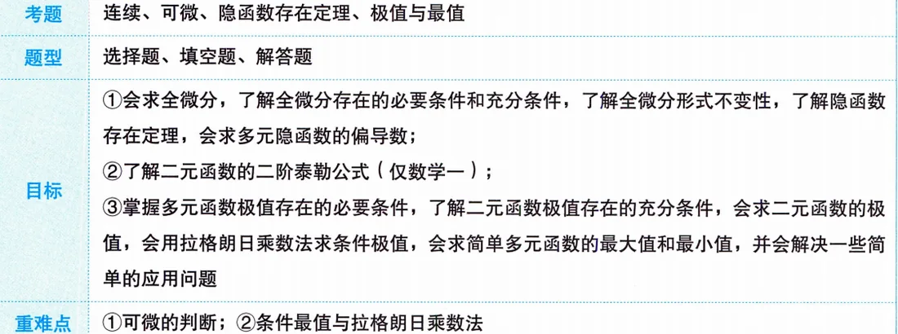
知识框架
- 基本概念
- 邻域
- \(\delta\) 邻域 \(U(P_0,\delta)\)：以 \(P_0\) 为中心、\(\delta\) 为半径的圆盘内部（不含边界）
- 去心 \(\delta\) 邻域 \(\overset{\circ}{U}(P_0,\delta)\)：再加 \(0<|PP_0|\)
- 一元的邻域是区间，二元的邻域是圆盘（印 P349）
- 二重极限
- \(\varepsilon\)-\(\delta\) 定义：趋近路径有无穷多种（与一元的本质区别）
- 否定存在：路径反例法（两条路径不同值 / 某路径不存在）
- 肯定存在：夹逼、等价无穷小、脱帽法（洛必达与单调有界不可用）
- 连续
- 定义 \(\lim\limits_{(x,y)\to(x_0,y_0)}f=f(x_0,y_0)\)；考纲不要求间断点分类
- 二元初等函数在定义区域上连续（例13.2 的弹药）
- 偏导数
- 定义（增量式与函数差值式两副面孔）、几何意义（截线切线斜率）
- 高阶偏导；二阶混合偏导连续则与次序无关
- 可微
- 引例：\(S=xy\) 的全增量 \(y\Delta x+x\Delta y+\Delta x\Delta y\)
- 定义 \(\Delta z=A\Delta x+B\Delta y+o(\rho)\)；必要条件 \(A=f'_x,\ B=f'_y\)
- 充分条件：偏导数连续；判别三步（重难点①）
- 多元函数微分法则
- 链式求导规则
- 复合结构图；"链条三代，爷爷对每个孙子的爱是不变的"
- 全导数 \(\dfrac{\mathrm{d}z}{\mathrm{d}t}=\dfrac{\partial z}{\partial u}\dfrac{\mathrm{d}u}{\mathrm{d}t}+\dfrac{\partial z}{\partial v}\dfrac{\mathrm{d}v}{\mathrm{d}t}\)
- \(f'_1,f'_2\) 记号：只认位置不认内容；求导后复合结构不变
- 全微分形式不变性：\(u,v\) 是自变量还是中间变量，\(\mathrm{d}z\) 同形
- 隐函数存在定理（公式法）：\(F'_y\neq0\) / \(F'_z\neq0\)；用时 \(x,y,z\) 相互独立
- 二元函数的拉格朗日定理：连通区域上偏导恒零推出常函数（含反例警告）
- 多元函数的极值与最值
- 概念：极值（局部）与最值（整体）；极值点不要求连续可微
- 无条件极值
- 必要条件找可疑点：驻点 \(\cup\) 偏导不存在的点（\(z=\sqrt{x^2+y^2}\)）
- \(AC-B^2\) 充分条件判别；\(\Delta=0\) 方法失效另谋他法（重难点②的前置）
- 条件最值与拉格朗日乘数法
- 四步流程；未知量个数 = 变量数 + 约束个数
- 约束易解出时代入降元，化条件最值为无条件最值
- 最远（近）点的垂线原理：连线垂直切线；考纲没有但可直接用
- 有界闭区域上连续函数的最值：内部可疑点 + 边界候选点 + 比较函数值
核心概念与定理
定义13.1 邻域与去心邻域
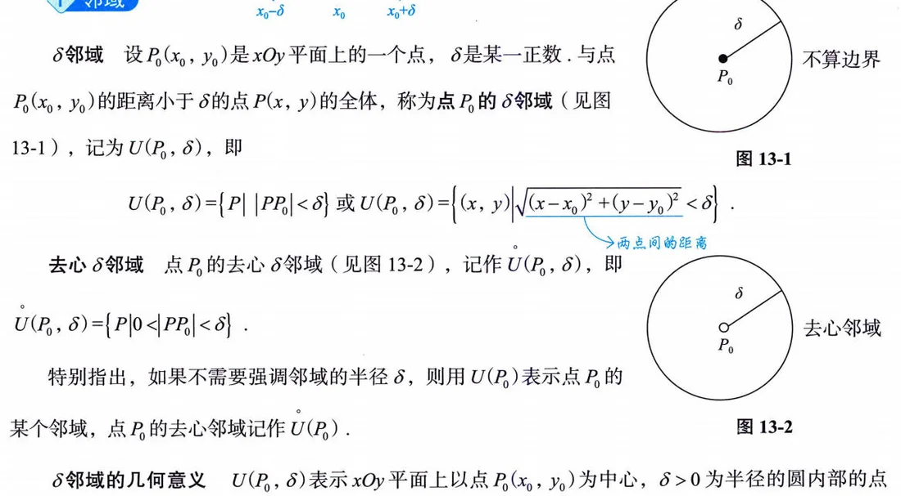
邻域是一切定义的地基：\(U(P_0,\delta)=\{(x,y)\mid\sqrt{(x-x_0)^2+(y-y_0)^2}<\delta\}\)，是 \(xOy\) 平面上以 \(P_0(x_0,y_0)\) 为中心、\(\delta>0\) 为半径的圆内部的点全体，不算边界；去心邻域再加上条件 \(0<|PP_0|\)。不强调半径时记 \(U(P_0)\)、\(\overset{\circ}{U}(P_0)\)。一元的邻域是区间，二元的邻域是圆盘——这个几何差别后面处处用得上：一元极限 \(x\to x_0\) 时 \(x_0\) 可以是区间端点（只剩单侧极限），二元极限的 \(P_0\) 可以是区域 \(D\) 的边界点，定义照样写（印 P350 极限定义里明确允许 \(P_0\) 为 \(D\) 的边界点）。
定义13.2 二重极限
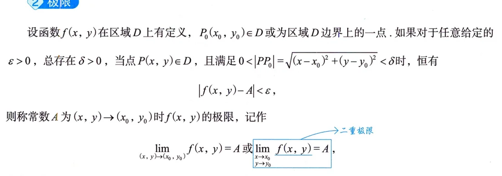
\(\varepsilon\)-\(\delta\) 定义照搬一元、只把"区间"换成"圆盘"：\(\forall\varepsilon>0\)，\(\exists\delta>0\)，当 \(P(x,y)\in D\) 且 \(0<|PP_0|=\sqrt{(x-x_0)^2+(y-y_0)^2}<\delta\) 时，恒有 \(|f(x,y)-A|<\varepsilon\)，则称 \(A\) 为二重极限，记 \(\lim\limits_{(x,y)\to(x_0,y_0)}f(x,y)=A\) 或 \(\lim\limits_{P\to P_0}f(P)=A\)。要害在注(1)：一元里 \(x\to x_0\) 有且仅有两种方式（左、右），二重极限中 \((x,y)\to(x_0,y_0)\) 一般有无穷多种方式——这是一切区别的根源，也是路径反例法的合法性来源。
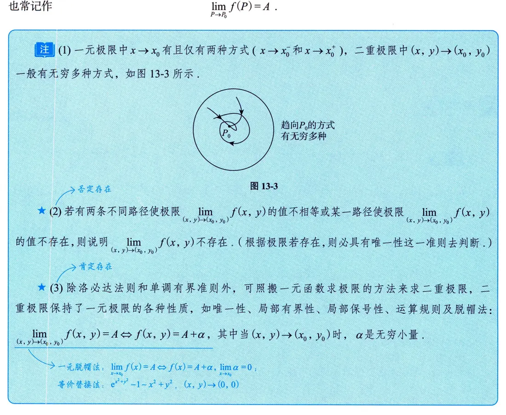
判定与求法全在注(2)(3)里：①若有两条不同路径使极限值不相等、或某一路径使极限不存在，则二重极限不存在（依据是"极限若存在必唯一"）；②除洛必达法则和单调有界准则外，一元求极限的方法都可照搬——二重极限保持唯一性、局部有界性、局部保号性、运算规则，脱帽法 \(\lim f(x,y)=A\Leftrightarrow f(x,y)=A+\alpha\)（\(\alpha\) 为无穷小）照样可用。做题纪律：路径法只能"否"不能"立"，肯定存在必须夹逼或定义。
定义13.3 二元函数的连续性
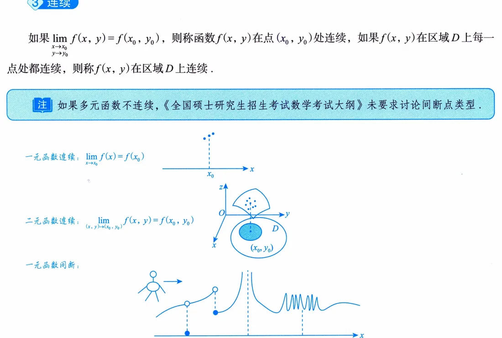
连续即 \(\lim\limits_{(x,y)\to(x_0,y_0)}f(x,y)=f(x_0,y_0)\)；在区域 \(D\) 上每点都连续则称在 \(D\) 上连续。两个好消息：一是考纲未要求讨论多元函数间断点的类型（书上一句"荆棘丛生、陷阱、断层、火山口"的直观图看看就好，不必展开）；二是二元初等函数在定义区域上连续——例13.2 反求参数就靠这句。
定义13.4 偏导数（定义、几何意义与两副面孔）
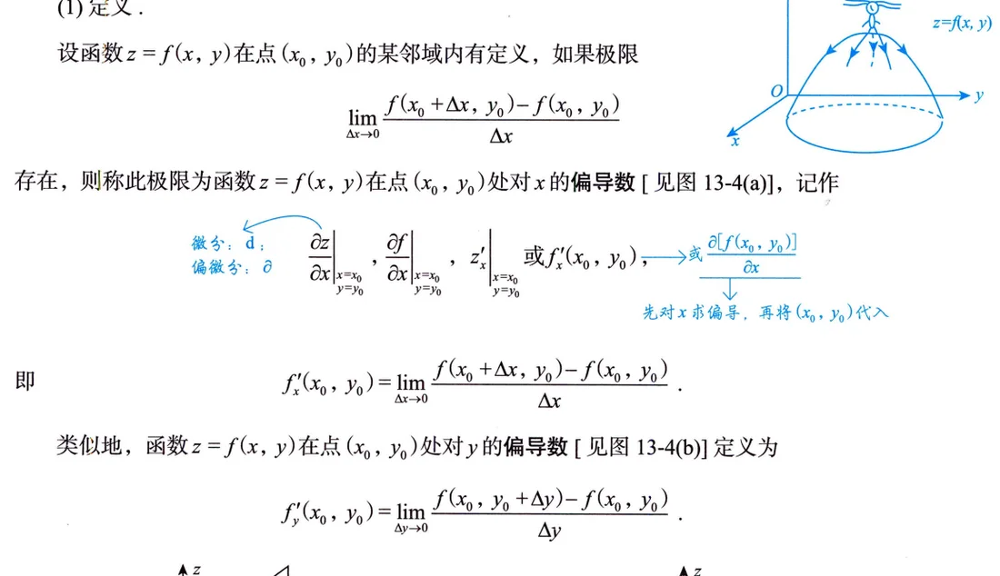
定义就是"只让一个变量动"的一元导数：
\[ f'_x(x_0,y_0)=\lim_{\Delta x\to 0}\frac{f(x_0+\Delta x,\,y_0)-f(x_0,y_0)}{\Delta x},\qquad f'_y(x_0,y_0)=\lim_{\Delta y\to 0}\frac{f(x_0,\,y_0+\Delta y)-f(x_0,y_0)}{\Delta y}, \]
记号有 \(z'_x,\ f'_x,\ \dfrac{\partial z}{\partial x},\ \dfrac{\partial f}{\partial x}\) 一整套。书上强调操作顺序："先对 \(x\) 求偏导，再将 \((x_0,y_0)\) 代入"——求偏导函数再代点，而不是把 \(y=y_0\) 先代进去再求导（虽然多数情况下结果一致，但先代值可能把函数变成常数，见例13.5 的对比讨论）。
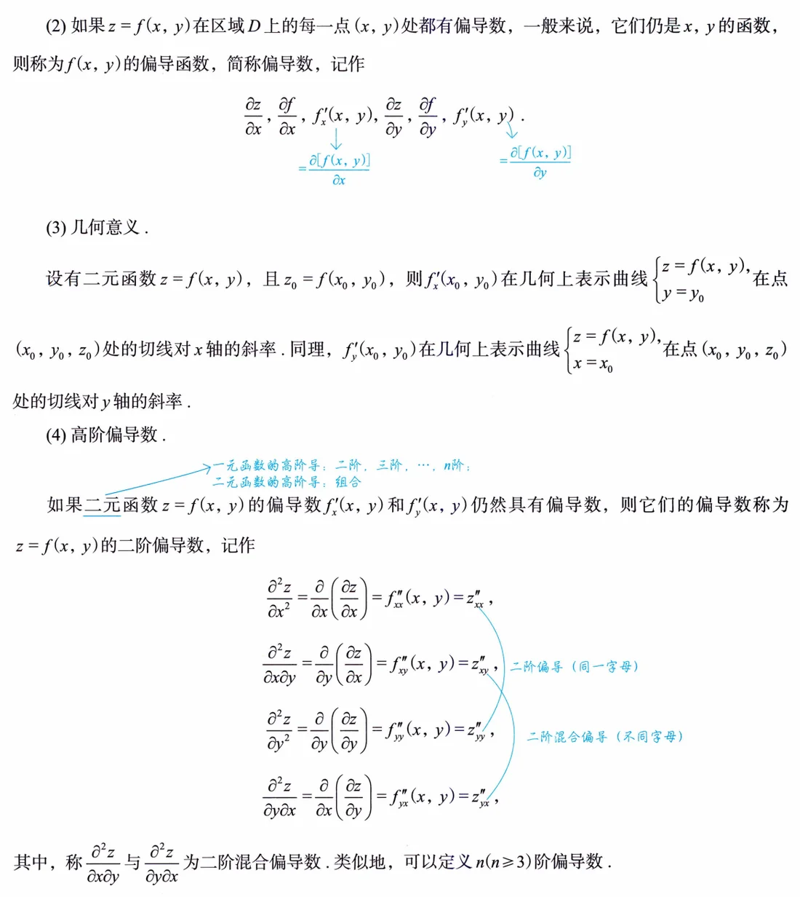
几何意义：\(f'_x(x_0,y_0)\) 是曲面 \(z=f(x,y)\) 被平面 \(y=y_0\) 截出的曲线在点 \(M(x_0,y_0,z_0)\) 处切线对 \(x\) 轴的斜率；\(f'_y\) 同理，换平面 \(x=x_0\)、对 \(y\) 轴的斜率（图13-4）。例13.3 之后书上加了一副重要面孔——同一个偏导有两种等价写法：增量式（上面的定义式）与函数差值式
\[ f'_x(x_0,y_0)=\lim_{x\to x_0}\frac{f(x,y_0)-f(x_0,y_0)}{x-x_0}, \]
带绝对值、分段结构的函数在可疑点求偏导一律回这两副定义，公式法在分段点不合用。
定义13.5 高阶偏导数
\(f'_x,f'_y\) 若仍具偏导数，则得二阶偏导 \(f''_{xx},\ f''_{xy},\ f''_{yx},\ f''_{yy}\)，其中 \(f''_{xy},f''_{yx}\) 称二阶混合偏导（不同字母），\(f''_{xx}\) 为二阶偏导（同一字母）。核心定理：若 \(f''_{xy}\) 与 \(f''_{yx}\) 都在区域 \(D\) 内连续，则在 \(D\) 内 \(f''_{xy}=f''_{yx}\)，即混合偏导在连续条件下与求导次序无关。做题时"连续"一般由初等表达式自动保证，放心交换次序；例13.9 里合并 \(f''_{12}=f''_{21}\) 同类项就是用它。
定义13.6 全微分与可微（定义与必要条件）
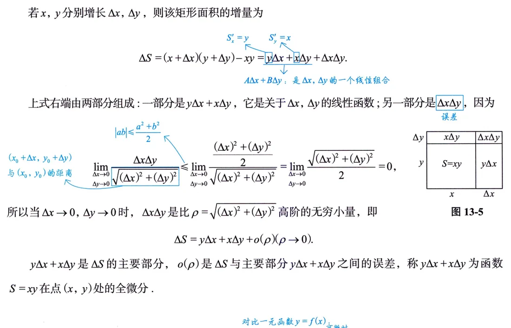
先看引例：矩形面积 \(S=xy\)，若 \(x,y\) 分别增长 \(\Delta x,\Delta y\)，则
\[ \Delta S=(x+\Delta x)(y+\Delta y)-xy=y\Delta x+x\Delta y+\Delta x\Delta y, \]
其中误差项满足 \(\lim\limits_{(\Delta x,\Delta y)\to(0,0)}\dfrac{|\Delta x\Delta y|}{\sqrt{(\Delta x)^2+(\Delta y)^2}}=0\)，即 \(\Delta S=y\Delta x+x\Delta y+o(\rho)\)，\(\rho=\sqrt{(\Delta x)^2+(\Delta y)^2}\)。线性部分 \(y\Delta x+x\Delta y\) 就是全微分的原型——这套"线性主部+高阶无穷小误差"和一元微分的引例完全平行。
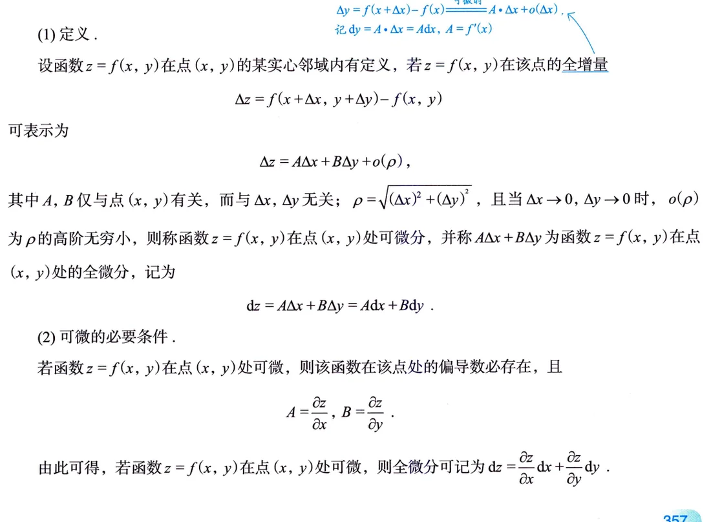
定义：若全增量 \(\Delta z=f(x+\Delta x,y+\Delta y)-f(x,y)\) 可表示为
\[ \Delta z=A\Delta x+B\Delta y+o(\rho),\qquad \rho=\sqrt{(\Delta x)^2+(\Delta y)^2}, \]
其中 \(A,B\) 仅与点 \((x,y)\) 有关而与 \(\Delta x,\Delta y\) 无关，则称 \(z=f(x,y)\) 在该点可微，\(A\Delta x+B\Delta y\) 为全微分，记 \(\mathrm{d}z=A\mathrm{d}x+B\mathrm{d}y\)。必要条件：可微 \(\Rightarrow\) 偏导数必存在，且 \(A=f'_x,\ B=f'_y\)，于是 \(\mathrm{d}z=\dfrac{\partial z}{\partial x}\mathrm{d}x+\dfrac{\partial z}{\partial y}\mathrm{d}y\)。书上注(1)专门对比：一元函数可微 \(\Leftrightarrow\) 可导；二元函数只有 可微 \(\Rightarrow\) 偏导数存在，反向不成立——这个不对称是多元微分学的第一道坎。
定理13.1 可微的充分条件与偏导连续的判别
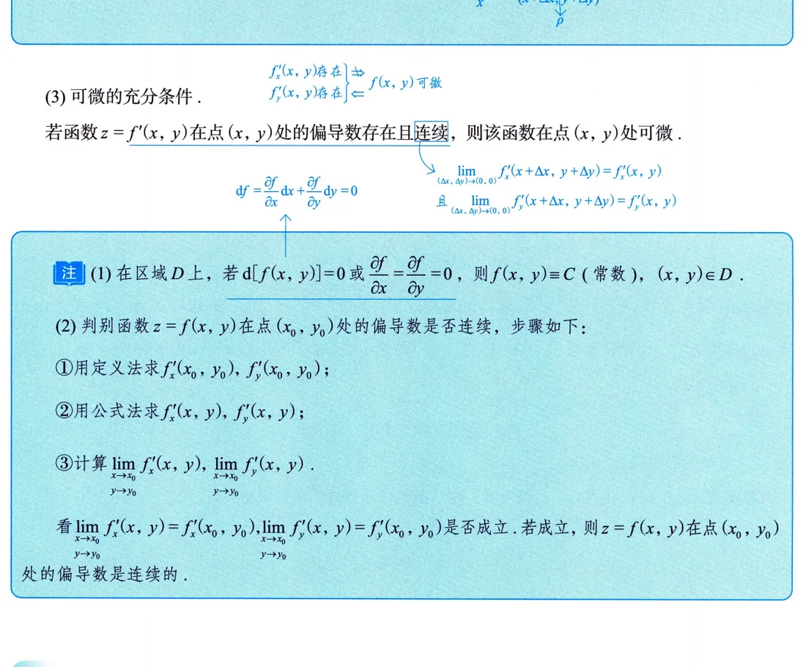
充分条件：若 \(z=f(x,y)\) 在点 \((x,y)\) 处偏导数存在且连续，则在该点可微。注意方向：这是"偏导连续 \(\Rightarrow\) 可微"，只是充分条件不是必要条件——可以存在"可微但偏导不连续"的函数；而偏导存在甚至偏导连续的一半，都推不出可微（习题 13.3 的结论就是"偏导数存在，但不可微"）。判"偏导连不连续"也有固定三步（印 P358）：①用定义法求 \(f'_x(x_0,y_0),f'_y(x_0,y_0)\)（点值）；②用公式法求 \(f'_x(x,y),f'_y(x,y)\)（表达式）；③检验 \(\lim\limits_{(x,y)\to(x_0,y_0)}f'_x(x,y)=f'_x(x_0,y_0)\)、\(\lim f'_y=f'_y(x_0,y_0)\) 是否成立，成立才叫偏导数连续。
法则13.1 可微的判别三步（重难点①）
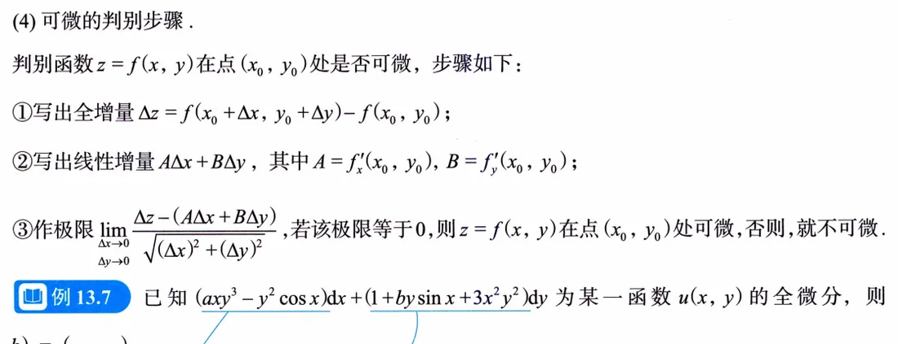
判别 \(z=f(x,y)\) 在点 \((x_0,y_0)\) 处是否可微，标准流程：①写出全增量 \(\Delta z=f(x_0+\Delta x,y_0+\Delta y)-f(x_0,y_0)\)；②写出线性增量 \(A\Delta x+B\Delta y\)，其中 \(A=f'_x(x_0,y_0),\ B=f'_y(x_0,y_0)\) 必须是该点用定义求出的偏导（分段点尤忌公式法）；③作极限
\[ \lim_{(\Delta x,\Delta y)\to(0,0)}\frac{\Delta z-(A\Delta x+B\Delta y)}{\sqrt{(\Delta x)^2+(\Delta y)^2}}, \]
等于 \(0\) 则可微，否则不可微。三步的骨架和一元"可微 \(\Leftrightarrow \lim\dfrac{\Delta y-dy}{\Delta x}=0\)"一脉相承，只是分母从 \(|\Delta x|\) 换成了 \(\rho\)。
定理13.2 极限、连续、偏导、可微的关系图
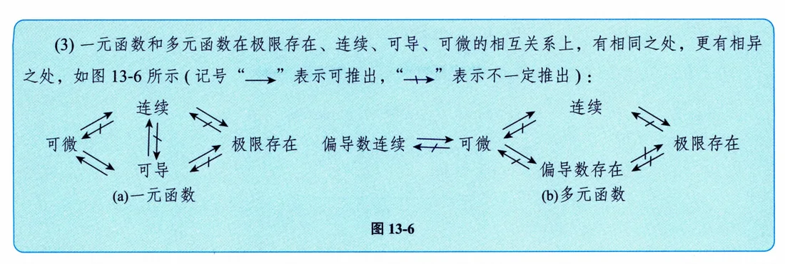
一元：可微 \(\Leftrightarrow\) 可导 \(\Rightarrow\) 连续 \(\Rightarrow\) 极限存在。多元：偏导数连续 \(\Rightarrow\) 可微 \(\Rightarrow\) 连续且偏导数存在 \(\Rightarrow\) 极限存在，且所有箭头都不可逆；"连续"与"偏导数存在"两个框互相都推不出对方。图13-6 这张图是本讲选择题的题库：每一条箭头都要能配出反例——偏导存在推不出连续、推不出可微用 \(z=|xy|\)（例13.8 的 \(z_1\)），连续推不出偏导存在用 \(z=\sqrt{x^2+y^2}\)，可微推不出偏导连续的例子在习题里。务必默画得出。
法则13.2 链式求导规则、全导数与记号约定
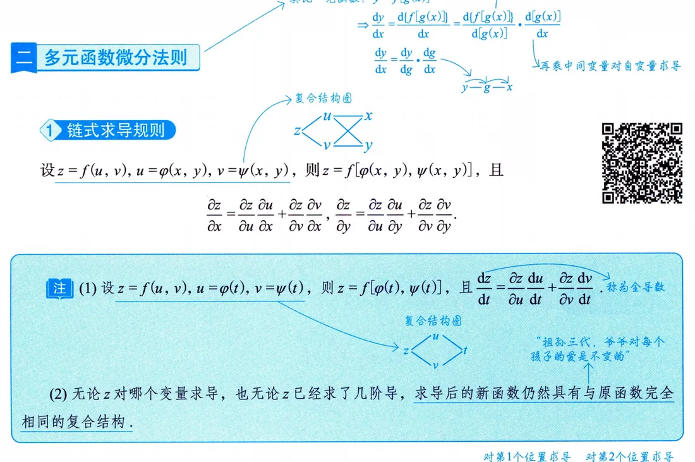
设 \(z=f(u,v)\)，\(u=\varphi(x,y)\)，\(v=\psi(x,y)\)，则
\[ \frac{\partial z}{\partial x}=\frac{\partial z}{\partial u}\cdot\frac{\partial u}{\partial x}+\frac{\partial z}{\partial v}\cdot\frac{\partial v}{\partial x},\qquad \frac{\partial z}{\partial y}=\frac{\partial z}{\partial u}\cdot\frac{\partial u}{\partial y}+\frac{\partial z}{\partial v}\cdot\frac{\partial v}{\partial y}. \]
只有一个自变量时叫全导数：\(z=f(u,v),\ u=\varphi(t),\ v=\psi(t)\) 时 \(\dfrac{\mathrm{d}z}{\mathrm{d}t}=\dfrac{\partial z}{\partial u}\dfrac{\mathrm{d}u}{\mathrm{d}t}+\dfrac{\partial z}{\partial v}\dfrac{\mathrm{d}v}{\mathrm{d}t}\)。动笔前先画复合结构图，口诀"链条三代，爷爷对每个孙子的爱是不变的"（几个父辈就拆成几项之和，每项是链上导数之积）。
两条记号纪律（印 P361 注，例13.9、例13.10 都在敲打）：①无复合时 \(z=f(x,y)\) 的偏导记 \(f'_x,f'_y\)；有复合时一般用 \(f'_1,f'_2\)——\(f'_1\) 只表示对第 1 个位置求导，与第 1 个位置放的是什么表达式无关（\(f'_1\) 表示 \(f\) 对 \(u=x^2\) 求导这类话要能秒懂）；②更关键的纪律是：无论 \(z\) 对哪个变量求导、已经求了几阶，求导后的新函数仍然具有与原函数完全相同的复合结构——二阶偏导不出错全靠这句，每一项都是"外层导数乘中间变量导数"。
法则13.3 全微分形式不变性
设 \(z=f(u,v)\)，\(u=u(x,y)\)，\(v=v(x,y)\)，且各函数均有连续偏导数，则无论 \(u,v\) 是自变量还是中间变量，
\[ \mathrm{d}z=\frac{\partial z}{\partial u}\mathrm{d}u+\frac{\partial z}{\partial v}\mathrm{d}v \]
总成立。用它求隐函数的 \(\mathrm{d}z\) 特别顺手：方程两边直接取微分、最后再代点，一步到位（例13.12），比先求两个偏导再拼 \(\mathrm{d}z\) 省一半计算。
定理13.3 隐函数存在定理（公式法）
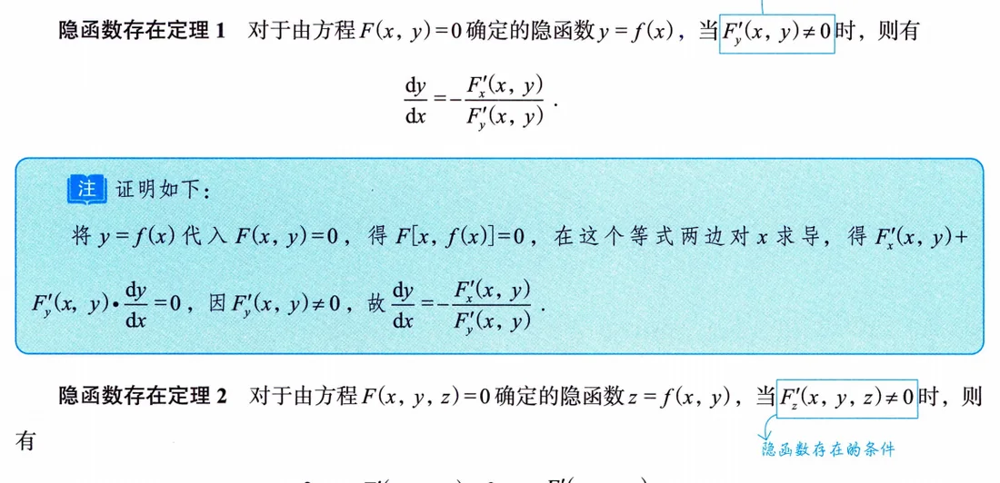
定理1：对 \(F(x,y)=0\) 确定的隐函数 \(y=f(x)\)，当 \(F'_y\neq0\) 时
\[ \frac{\mathrm{d}y}{\mathrm{d}x}=-\frac{F'_x(x,y)}{F'_y(x,y)}. \]
定理2：对 \(F(x,y,z)=0\) 确定的隐函数 \(z=z(x,y)\)，当 \(F'_z\neq0\) 时
\[ \frac{\partial z}{\partial x}=-\frac{F'_x(x,y,z)}{F'_z(x,y,z)},\qquad \frac{\partial z}{\partial y}=-\frac{F'_y(x,y,z)}{F'_z(x,y,z)}. \]
证明思路都是把 \(y=y(x)\)（或 \(z=z(x,y)\)）代回方程得恒等式，再对 \(x\) 求导解出。用公式法的口吻必须站稳：求 \(F\) 的偏导时 \(x,y,z\) 是相互独立的变量，对 \(x\) 求导时 \(y,z\) 都当常数（印 P366 蓝字批注）。为什么需要 \(F'_y\neq0\)？几何上若 \(F'_y=0\)，曲线在该点可能出现"一个 \(x\) 对应两个 \(y\)"，不符合函数定义（印 P365 注，例13.14 还会说明这个条件只是充分而非必要）。
定理13.4 二元函数的拉格朗日定理
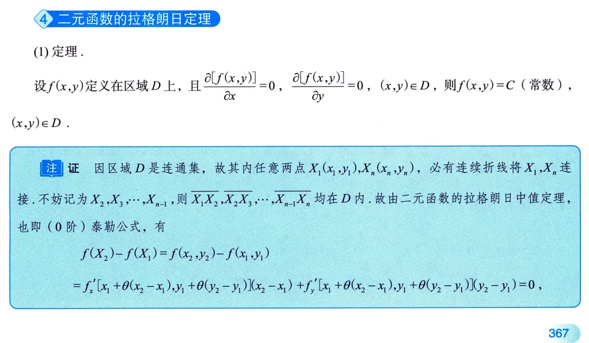
定理：设 \(z=f(x,y)\) 在（连通）区域 \(D\) 内可微，若在 \(D\) 内 \(f'_x\equiv0\) 且 \(f'_y\equiv0\)，则 \(f(x,y)\equiv C\)（常数）。证明思路值得看一遍：\(D\) 连通，任两点间可用折线 \(X_1X_2\cdots X_n\) 相连，对每段用二元拉格朗日中值定理（零阶泰勒公式）得每段增量恒为零，于是任意两点函数值相等。
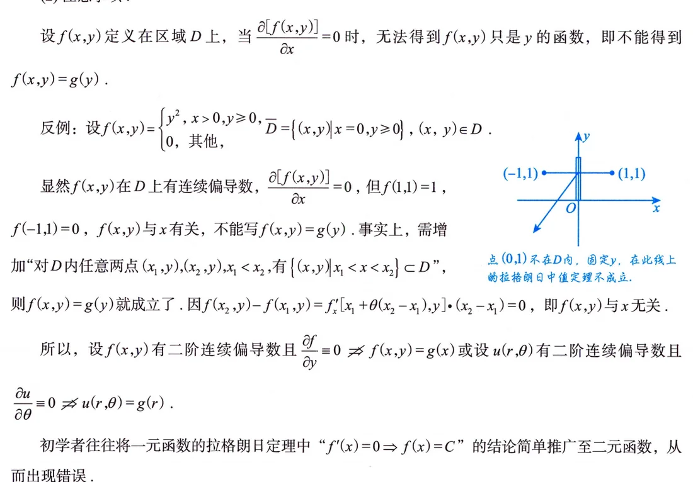
注意事项（初学者最容易栽的地方）：在 \(D\) 上单独一条 \(\dfrac{\partial f}{\partial x}\equiv0\) 推不出 \(f(x,y)=g(y)\)——除非补充"对 \(D\) 内任意两点 \((x_1,y),(x_2,y)\)（\(x_1<x<x_2\)）有 \((x,y)\in D\)"，即两点间的竖线段整个落在 \(D\) 内。书上的反例（印 P368）：\(D\) 为挖去某条竖线（含点 \((0,1)\)）后的平面区域，\(f(x,y)\) 在 \(x>0\) 部分取 1、其余取 0，则 \(f\) 在 \(D\) 上有连续偏导且 \(f'_x\equiv0\)，但 \(f(1,1)=1\neq0=f(-1,1)\)，\(f\) 与 \(x\) 有关，写不成 \(g(y)\)——因为固定 \(y\) 后这条水平线上的拉格朗日中值定理不成立。同理 \(\dfrac{\partial u}{\partial\theta}\equiv0\) 推不出 \(u(r,\theta)=g(r)\)。一元函数 "\(f'(x)\equiv0\Rightarrow f\equiv C\)" 不能想当然搬到二元只砍一半。
定义13.7 极值与最值的概念
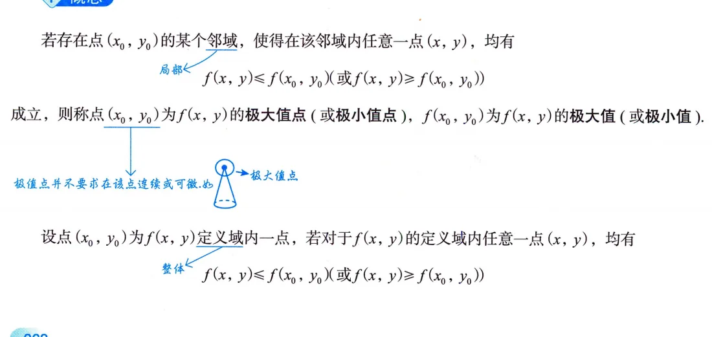
极值是局部概念：若存在 \((x_0,y_0)\) 的某邻域，使邻域内任意 \((x,y)\) 恒有 \(f(x,y)\le f(x_0,y_0)\)（或 \(\ge\)），则 \((x_0,y_0)\) 为极大（小）值点。最值是整体概念：对定义域内任意点恒有 \(f(x,y)\le f(x_0,y_0)\)（或 \(\ge\)）。两条提醒：①极值点并不要求在该点连续或可微（\(z=\sqrt{x^2+y^2}\) 在原点）；②二元函数取极值与两个一元截线取极值的关系是"前者是后者的充分条件"（例13.17 的结论）。
定理13.5 极值的必要条件与找可疑点
设 \(z=f(x,y)\) 在 \((x_0,y_0)\) 处取极值且一阶偏导存在，则 \(f'_x(x_0,y_0)=0,\ f'_y(x_0,y_0)=0\)（该条件同样适用于三元及以上）。与一元平行的推论：驻点只是"可疑点"的一半，偏导数不存在的点也可能是极值点——如 \(z=\sqrt{x^2+y^2}\) 在 \((0,0)\) 处取极小值，但 \(z'_x(0,0),z'_y(0,0)\) 均不存在。所以找可疑点的完整清单 = 驻点 \(\cup\) 偏导不存在的点（印 P370 小结框）。
定理13.6 极值的充分条件（\(AC-B^2\) 判别法）
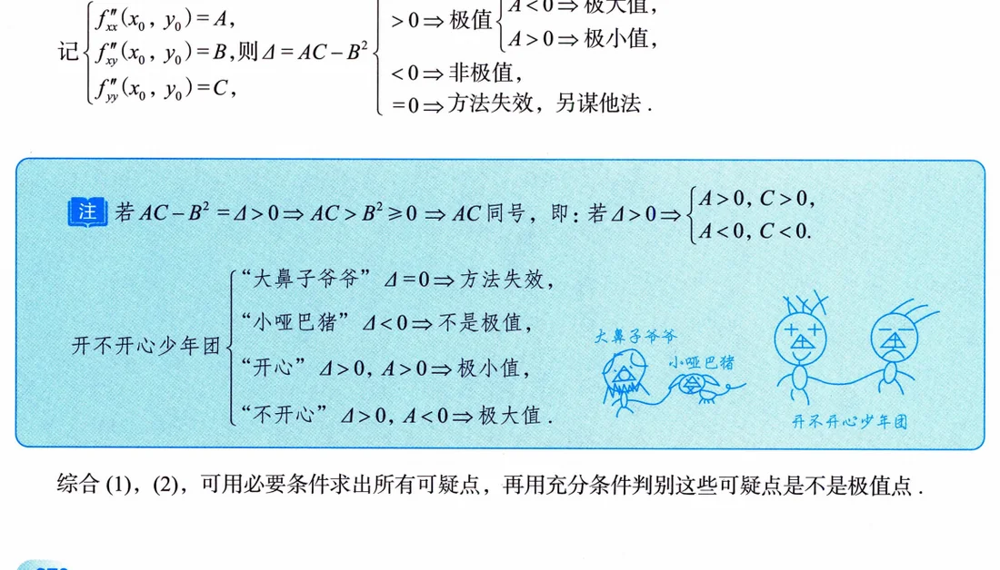
设可疑点处二阶偏导存在，记 \(A=f''_{xx}(x_0,y_0)\)，\(B=f''_{xy}(x_0,y_0)\)，\(C=f''_{yy}(x_0,y_0)\)，\(\Delta=AC-B^2\)：\(\Delta>0\) 时取极值（\(A<0\) 极大、\(A>0\) 极小）；\(\Delta<0\) 非极值；\(\Delta=0\) 方法失效、另谋他法（回定义或用路径讨论）。两个要点：①\(\Delta>0\Rightarrow AC>B^2\ge0\Rightarrow A,C\) 必同号，看 \(A\) 一个就能定极大极小；②该充分条件只适用于二元，三元及以上不能用。张宇的口诀可以帮你记：\(\Delta>0,A>0\) 是"开心"（极小），\(\Delta>0,A<0\) 是"不开心"（极大），\(\Delta<0\) 是"小哑巴猪"（非极值），\(\Delta=0\) 是"大鼻子爷爷"（方法失效）——合称"开不开心少年团"。综合必要条件+充分条件：先用必要条件求出所有可疑点，再用充分条件逐一判别。
法则13.4 拉格朗日乘数法（重难点②）
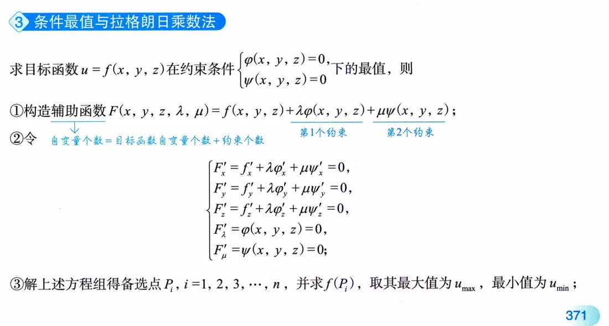
求目标函数 \(u=f(x,y,z)\) 在约束 \(\varphi(x,y,z)=0\)、\(\psi(x,y,z)=0\) 下的最值，四步走：①构造辅助函数 \(F(x,y,z,\lambda,\mu)=f+\lambda\varphi+\mu\psi\)，记住"未知量个数 = 目标函数自变量个数 + 约束个数"；②令 \(F\) 对所有变量（含 \(\lambda,\mu\)）的偏导为零，得方程组；③解出备选点 \(P_i\)，求 \(f(P_i)\) 取最大最小；④实际（封闭）问题由最值存在性兜底。若约束条件容易解出（如 \(z=z(x,y)\)），也可以直接代入目标函数降元，化成无条件最值问题（印 P372）。拉格朗日乘数法找到的只是"候选点"，最值还要靠比较与实际意义确认——不封闭的约束曲线要补端点值（例13.20 的注）。
法则13.5 最远（近）点的垂线原理
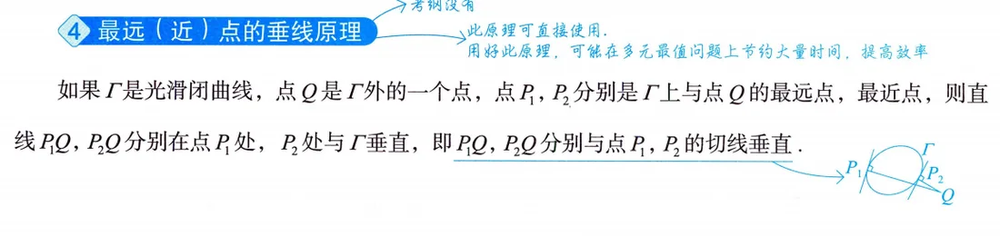
考纲没有，但此原理可直接使用：若 \(\Gamma\) 是光滑闭曲线，\(Q\) 是 \(\Gamma\) 外一点，\(P_1,P_2\) 分别是 \(\Gamma\) 上与 \(Q\) 的最远点、最近点，则直线 \(P_1Q\)、\(P_2Q\) 分别在 \(P_1\)、\(P_2\) 处与 \(\Gamma\) 垂直，即与该点处的切线垂直；两条光滑闭曲线不相交时，它们之间的最远（近）点连线是两曲线的公垂线。用它把"曲线到点/直线的距离最值"转化成一个垂直条件，常常能绕开拉格朗日的一坨联立（例13.21、习题 13.14 各演示一遍）。
法则13.6 有界闭区域上连续函数的最值三步
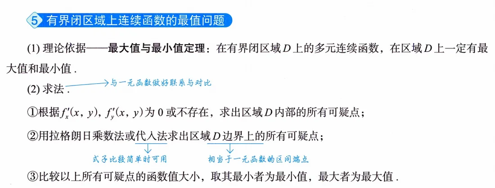
理论依据是最大值与最小值定理：有界闭区域 \(D\) 上的多元连续函数在 \(D\) 上必有最大、最小值（与一元的闭区间上连续函数最值定理平行）。求法三步：①由 \(f'_x=0,f'_y=0\) 或偏导不存在，求出 \(D\) 内部的所有可疑点；②用拉格朗日乘数法或代入法求出 \(D\) 边界上的所有可疑点（边界相当于一元函数的区间端点，代入法在边界方程简单时更快）；③比较以上所有可疑点的函数值，取最大者为最大值、最小者为最小值。例13.22 是标准演示：内部驻点、边界代入、比较三步一气呵成。
典型例题精讲
例13.1（二重极限：夹逼与路径反例）
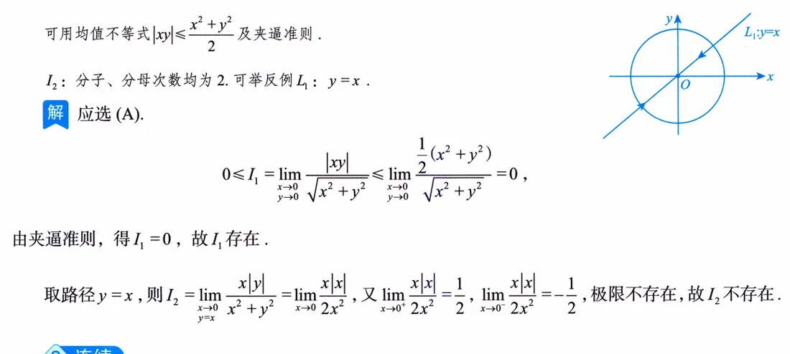
题 设 \(I_1=\lim\limits_{(x,y)\to(0,0)}\dfrac{|xy|}{\sqrt{x^2+y^2}}\)，\(I_2=\lim\limits_{(x,y)\to(0,0)}\dfrac{x|y|}{x^2+y^2}\)，判断其存在性。
思路 \(I_1\) 分子二次、分母一次，"分子阶数高"首选夹逼；\(I_2\) 分子分母同阶，多半要找路径反例。
要点 用均值不等式 \(|xy|\le\dfrac{x^2+y^2}{2}\)：\(0\le I_1\le\lim\limits_{(x,y)\to(0,0)}\dfrac{1}{2}\sqrt{x^2+y^2}=0\)，由夹逼准则 \(I_1=0\) 存在。\(I_2\) 取路径 \(y=x\)：\(x\to0^+\) 时 \(\dfrac{x\cdot x}{2x^2}=\dfrac12\)，\(x\to0^-\) 时 \(\dfrac{-x^2}{2x^2}=-\dfrac12\)，极限不存在，故 \(I_2\) 不存在。应选 (A)。
注 "低阶夹逼、同阶找路径"是面对二重极限存在性问题的第一反应，例13.8 还要回头用这两发子弹。
例13.2（连续定义反求参数）
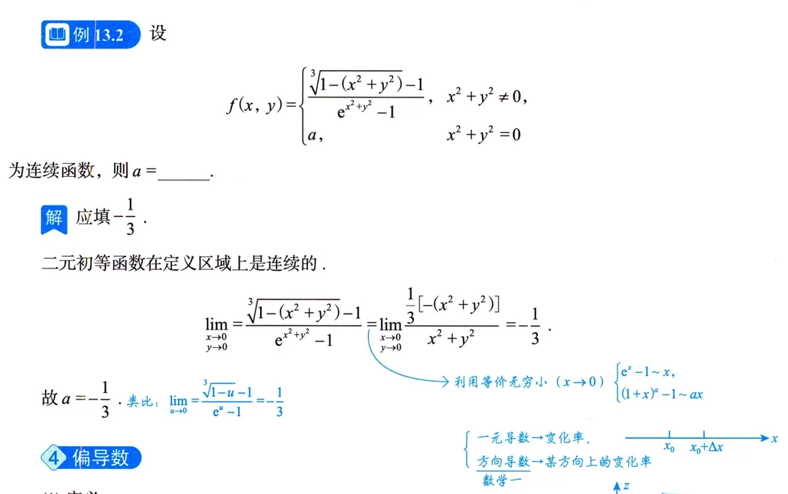
题 \(f(x,y)=\dfrac{\sqrt[3]{1-(x^2+y^2)}-1}{\mathrm{e}^{x^2+y^2}-1}\)（\(x^2+y^2\neq0\)），原点处 \(f(0,0)=a\)。若 \(f\) 连续，求 \(a\)。
思路 连续就意味着 \(a=\lim\limits_{(x,y)\to(0,0)}f\)；令 \(u=x^2+y^2\) 化成一元，等价无穷小直接上。
要点 当 \(u\to0\)：\(\sqrt[3]{1-u}-1\sim-\dfrac{u}{3}\)（一般地 \((1+x)^\alpha-1\sim\alpha x\)），\(\mathrm{e}^u-1\sim u\)，故极限为 \(-\dfrac13\)，即 \(a=-\dfrac13\)。类比的单元版本：\(\lim\limits_{u\to0}\dfrac{\sqrt[3]{1-u}-1}{\mathrm{e}^u-1}=-\dfrac13\)。
注 二重极限里只要函数只含组合 \(u=x^2+y^2\)，就整体换元降成一元处理——"令 \(u=x^2+y^2\)"是本讲高频动作。
例13.3（用定义讨论偏导存在性）
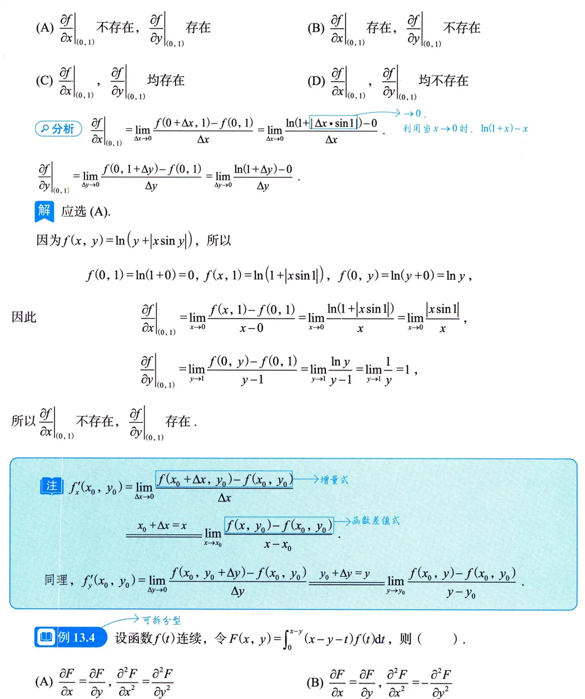
题 \(f(x,y)=\ln\bigl(y+|x\sin y|\bigr)\)，讨论 \(\left.\dfrac{\partial f}{\partial x}\right|_{(0,1)}\) 与 \(\left.\dfrac{\partial f}{\partial y}\right|_{(0,1)}\) 的存在性。
思路 带绝对值，公式法在 \((0,1)\) 不合用，回定义；先把两条"一元截线" \(f(x,1)\)、\(f(0,y)\) 写出来。
要点 \(f(0,1)=\ln 1=0\)，于是
\[ \left.\frac{\partial f}{\partial x}\right|_{(0,1)}=\lim_{x\to0}\frac{\ln(1+|x\sin 1|)}{x}=\lim_{x\to0}\frac{|x|\sin 1}{x}, \]
（用 \(\ln(1+t)\sim t\)，但 \(t=|x|\sin1\) 带绝对值）左右极限为 \(\pm\sin 1\)，不存在；而 \(f(0,y)=\ln y\)，
\[ \left.\frac{\partial f}{\partial y}\right|_{(0,1)}=\lim_{y\to1}\frac{\ln y}{y-1}=1, \]
存在。应选 (A)。
注 \(\ln(1+t)\sim t\) 遇上 \(|t|\) 就得拆左右——这就是"绝对值点的偏导要回定义"的标准场景。同一个点两个偏导的存在性可以互不相同，别一把抓。
例13.4（可拆分型：变限积分含参数求偏导）
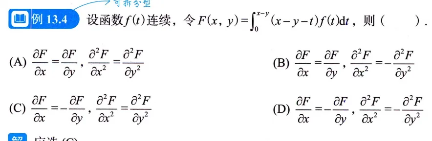
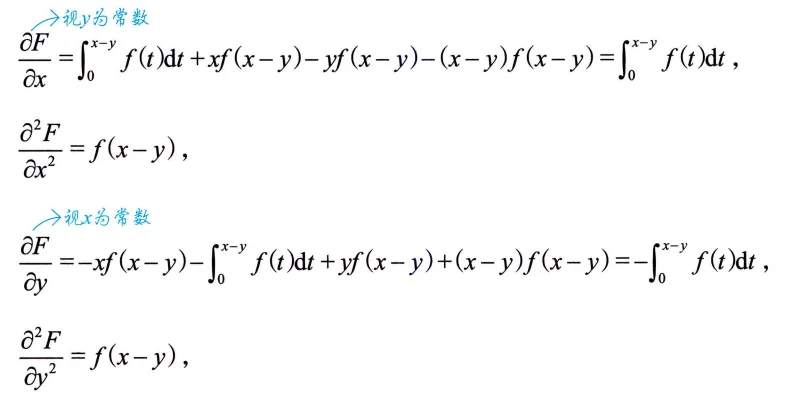
题 设函数 \(f(t)\) 连续，令 \(F(x,y)=\displaystyle\int_0^{x-y}(x-y-t)f(t)\,\mathrm{d}t\)，则四个选项给出的偏导数关系中正确的是（ ）。
思路 这是"可拆分型"：被积函数含参变量可以拆出来，先把 \(F\) 展开成 \(x\int f-y\int f-\int tf\)，再"视 \(y\) 为常数"对 \(x\) 求偏导、"视 \(x\) 为常数"对 \(y\) 求偏导，上下限同步求导。
要点 展开 \(F(x,y)=x\displaystyle\int_0^{x-y}f(t)\mathrm{d}t-y\int_0^{x-y}f(t)\mathrm{d}t-\int_0^{x-y}tf(t)\mathrm{d}t\)。对 \(x\) 求偏导（\(y\) 为常数）：
\[ \frac{\partial F}{\partial x}=\int_0^{x-y}f(t)\mathrm{d}t+xf(x-y)-yf(x-y)-(x-y)f(x-y)=\int_0^{x-y}f(t)\mathrm{d}t, \]
后三项恰好抵消；再求导得 \(\dfrac{\partial^2F}{\partial x^2}=f(x-y)\)。同理 \(\dfrac{\partial F}{\partial y}=-\displaystyle\int_0^{x-y}f(t)\mathrm{d}t\)，\(\dfrac{\partial^2F}{\partial y^2}=-[f(x-y)\cdot(-1)]=f(x-y)\)——注意上限 \(x-y\) 对 \(y\) 的导数是 \(-1\)，负负得正。对照选项，\(F_{xx}=F_{yy}=f(x-y)\)，应选 (B)（\(\dfrac{\partial^2F}{\partial x^2}=\dfrac{\partial^2F}{\partial y^2}\)；顺带 \(\dfrac{\partial F}{\partial x}=-\dfrac{\partial F}{\partial y}\) 也成立）。
注 抵消是设计好的：含参变限积分求偏导时"前面对参变量求导、后面变限部分求导"两股力都要算全，漏一股答案就歪。
例13.5（不可拆分，换元求导型）
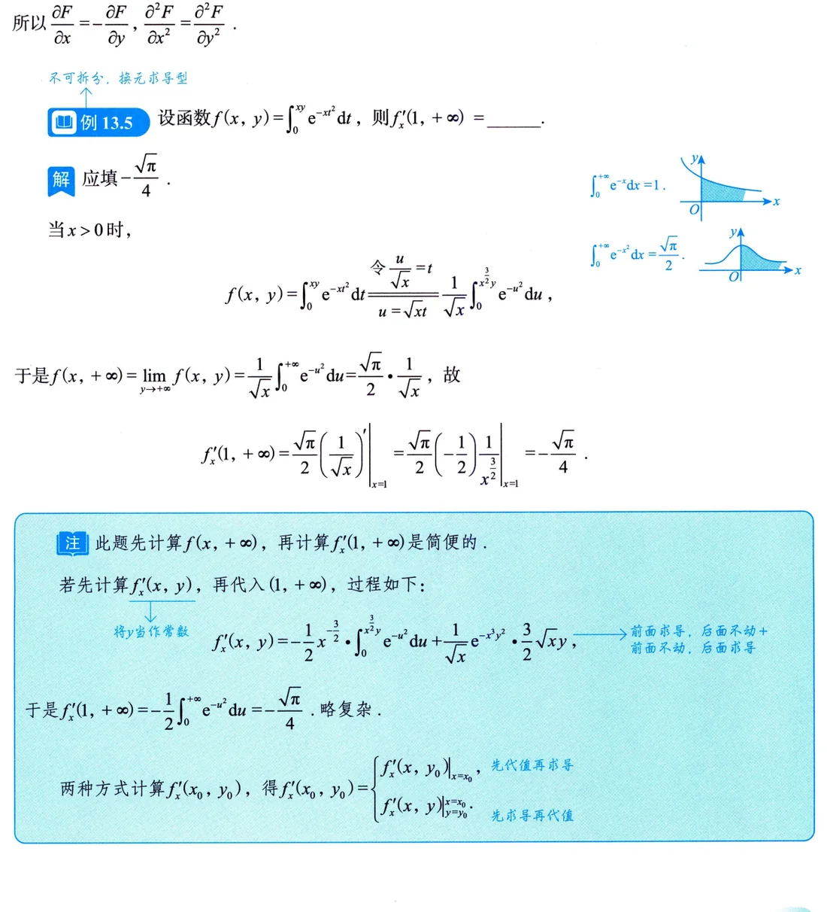
题 设函数 \(f(x,y)=\displaystyle\int_0^{y}\mathrm{e}^{-x^2t^2}\,\mathrm{d}t\)，求 \(\left.\dfrac{\partial f}{\partial x}\right|_{(1,+\infty)}\)。
思路 被积函数里 \(x,t\) 缠在一起、拆不开——先代换 \(u=xt\) 把 \(f\) 改写成 \(\dfrac1x\displaystyle\int_0^{xy}\mathrm{e}^{-u^2}\mathrm{d}u\)（当 \(x>0\)），"前面求导后面不动、前面不动后面求导"两步做全；更妙的是先算 \(f(x,+\infty)\) 再求导。
要点 当 \(x>0\) 时 \(f(x,+\infty)=\displaystyle\lim_{y\to+\infty}\int_0^{y}\mathrm{e}^{-x^2t^2}\mathrm{d}t=\int_0^{+\infty}\mathrm{e}^{-u^2}\cdot\dfrac{\mathrm{d}u}{x}=\dfrac{\sqrt\pi}{2x}\)（用概率积分 \(\int_0^{+\infty}\mathrm{e}^{-u^2}\mathrm{d}u=\dfrac{\sqrt\pi}{2}\)）。于是 \(\dfrac{\partial f}{\partial x}(x,+\infty)=-\dfrac{\sqrt\pi}{2x^2}\)，代 \(x=1\) 得 \(-\dfrac{\sqrt\pi}{2}\)。应填 \(-\dfrac{\sqrt\pi}{2}\)。
注 书上注专门比较了两条路：先算 \(f(x,+\infty)\) 再求导是简便的；若先求 \(f'_x(x,y)\) 再代 \((1,+\infty)\)，由 \(\dfrac1x\int_0^{xy}\mathrm{e}^{-u^2}\mathrm{d}u\) 对 \(x\) 求导得 \(-\dfrac{1}{x^2}\int_0^{xy}\mathrm{e}^{-u^2}\mathrm{d}u+\dfrac{y}{x}\mathrm{e}^{-x^2y^2}\)，代点后同样得 \(-\dfrac{\sqrt\pi}{2}\)，但过程略复杂。"先代值再求导"与"先求导再代值"两条路都要会走。
例13.6（反问题：由偏导反求函数）
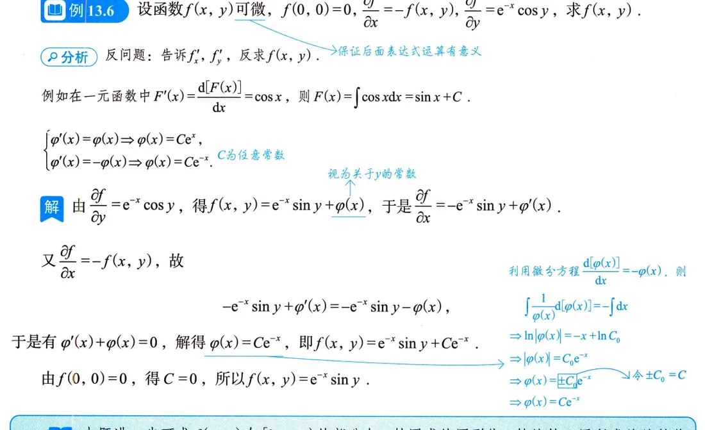
题 设函数 \(f(x,y)\) 可微，\(f(0,0)=0\)，\(\dfrac{\partial f}{\partial y}=\mathrm{e}^{-x}\cos y\)，且 \(\dfrac{\partial f}{\partial x}=-f(x,y)\)，求 \(f(x,y)\)。
思路 反问题："告诉偏导、反求函数"，类比一元里 \(F'(x)=\cos x\Rightarrow F(x)=\sin x+C\)。由 \(f'_y\) 出发把 \(x\) 视为常数对 \(y\) 积分，积分"常数"实为 \(\varphi(x)\)，再用另一个条件定它。
要点 对 \(y\) 积分：\(f(x,y)=\mathrm{e}^{-x}\sin y+\varphi(x)\)，于是 \(f'_x=-\mathrm{e}^{-x}\sin y+\varphi'(x)\)。代入条件 \(f'_x=-f\)：
\[ -\mathrm{e}^{-x}\sin y+\varphi'(x)=-\mathrm{e}^{-x}\sin y-\varphi(x)\ \Longrightarrow\ \varphi'(x)+\varphi(x)=0, \]
这是变量可分离方程（或"利用微分方程"），解得 \(\varphi(x)=C\mathrm{e}^{-x}\)，即 \(f=\mathrm{e}^{-x}\sin y+C\mathrm{e}^{-x}\)。由 \(f(0,0)=0\) 得 \(C=0\)，故 \(f(x,y)=\mathrm{e}^{-x}\sin y\)。
注 两个易丢的关节：积分出来的必须是 \(\varphi(x)\) 而非常数 \(C\)；定 \(\varphi\) 靠的是还没用过的那个条件。题干特别提醒"保证后面表达式运算有意义"。
例13.7（全微分的反问题：由 \(\mathrm{d}u\) 反求参数）
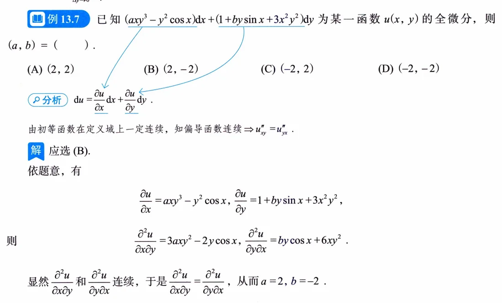
题 已知 \((axy^3-y^2\cos x)\mathrm{d}x+(1+b y\sin x+3x^2y^2)\mathrm{d}y\) 为某一函数 \(u(x,y)\) 的全微分，则 \((a,b)=\)（ ）。
思路 全微分 \(\mathrm{d}u=u'_x\mathrm{d}x+u'_y\mathrm{d}y\)，比对系数得 \(u'_x=axy^3-y^2\cos x\)、\(u'_y=1+by\sin x+3x^2y^2\)；再由"初等函数在定义域上连续知偏导函数连续 \(\Rightarrow u''_{xy}=u''_{yx}\)"建立方程。
要点 依题意写出两个偏导后，算混合偏导：
\[ u''_{xy}=\frac{\partial}{\partial y}\left(axy^3-y^2\cos x\right)=3axy^2-2y\cos x,\qquad u''_{yx}=\frac{\partial}{\partial x}\left(1+by\sin x+3x^2y^2\right)=by\cos x+6xy^2. \]
二者显然连续，令相等：\(3a=6\) 且 \(b=-2\)，得 \((a,b)=(2,-2)\)。应选 (B)。
注 "某个二元函数的全微分"这个条件翻译过来就是混合偏导相等——和第 9 讲里"(\(P\mathrm{d}x+Q\mathrm{d}y\) 是全微分 \(\Rightarrow Q'_x=P'_y\)"一个道理，基础阶段先用混合偏导相等这一层。
例13.8（可微性判定：判别三步的正面示范）
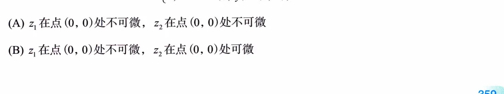
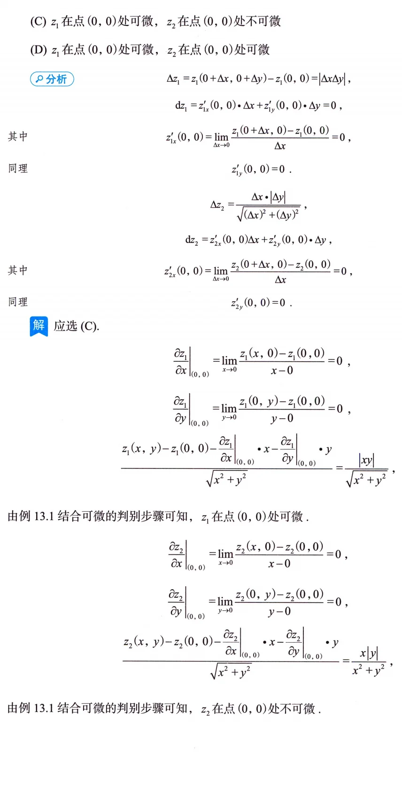
题 设 \(z_1=|xy|\)，\(z_2=\dfrac{x|y|}{\sqrt{x^2+y^2}}\)（原点处规定为 \(0\)），判断它们在 \((0,0)\) 处的可微性。
思路 都是分段点，按判别三步走：先用定义求偏导（这题两个函数在原点的偏导全为 \(0\)），再看 \(\dfrac{\Delta z-0}{\rho}\) 趋不趋于 \(0\)。
要点 \(z_1\)：先用定义算 \(z'_{1x}(0,0)=\lim\limits_{\Delta x\to0}\dfrac{|\Delta x\cdot0|-0}{\Delta x}=0\)，同理 \(z'_{1y}(0,0)=0\)，于是看
\[ \lim_{(\Delta x,\Delta y)\to(0,0)}\frac{z_1(\Delta x,\Delta y)-z_1(0,0)}{\sqrt{(\Delta x)^2+(\Delta y)^2}}=\frac{|xy|}{\sqrt{x^2+y^2}}\to0 \]
（正是例13.1 的 \(I_1\)），可微；\(z_2\)：同样先得两个偏导为 \(0\)，残差比对应 \(\dfrac{x|y|}{x^2+y^2}\)（正是例13.1 的 \(I_2\)），极限不存在，不可微。应选 (C)。
注 张宇这里明显是连环编排：极限例题给可微例题当子弹。做题遇到 \(|xy|\)、\(\dfrac{x|y|}{x^2+y^2}\) 直接调用结论；注意"偏导存在、函数连续但不可微"（\(z_1\) 其实连续）与"偏导存在但不连续、不可微"（\(z_2\)）这两个反例各自堵死关系图的一条回头路。
例13.9（抽象函数二阶混合偏导）
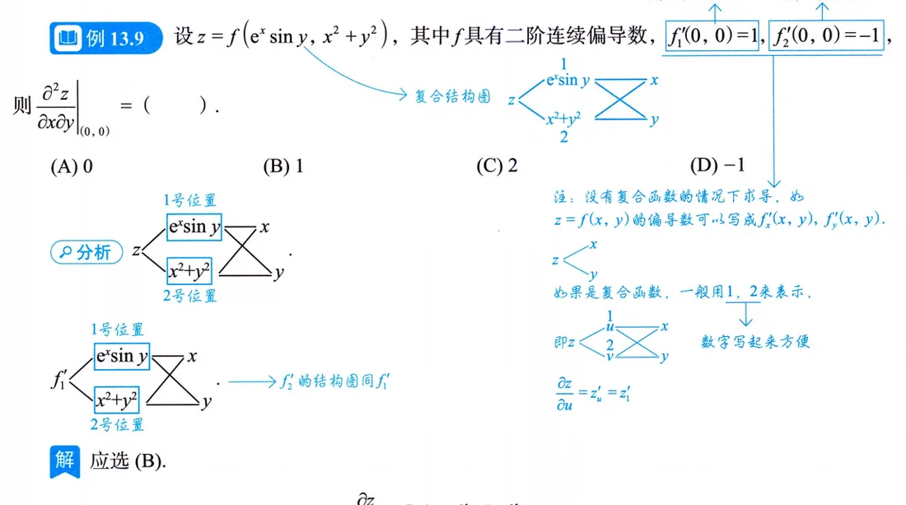
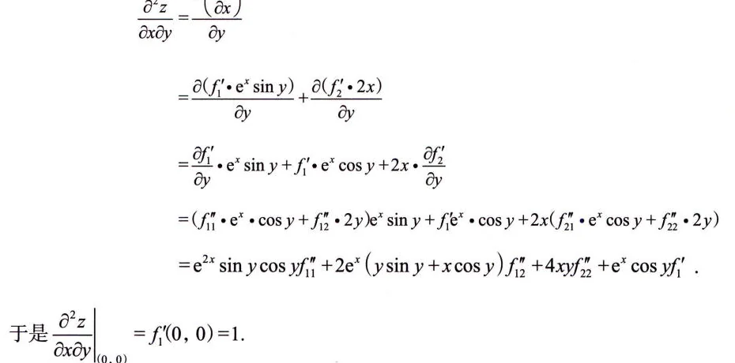
题 \(z=f\bigl(\mathrm{e}^x\sin y,\ x^2+y^2\bigr)\)，\(f\) 有二阶连续偏导数，\(f'_1(0,0)=1\)，\(f'_2(0,0)=-1\)，求 \(\left.\dfrac{\partial^2 z}{\partial x\,\partial y}\right|_{(0,0)}\)。
思路 画复合结构图（1 号位置 \(\mathrm{e}^x\sin y\)，2 号位置 \(x^2+y^2\)）；\(f'_1\)、\(f'_2\) 对 \(y\) 求导时仍是复合函数，链式法则逐项乘开。
要点 先得 \(\dfrac{\partial z}{\partial x}=\mathrm{e}^x\sin y\,f'_1+2xf'_2\)；再对 \(y\) 求导：
\[ \frac{\partial^2 z}{\partial x\,\partial y}=\mathrm{e}^{2x}\sin y\cos y\,f''_{11}+2\mathrm{e}^x\bigl(y\sin y+x\cos y\bigr)f''_{12}+4xy\,f''_{22}+\mathrm{e}^x\cos y\,f'_1. \]
代入 \((0,0)\)，前三项全部归零，只剩 \(\left.\dfrac{\partial^2 z}{\partial x\,\partial y}\right|_{(0,0)}=f'_1(0,0)=1\)。应选 (B)。
注 \(f''_{12}=f''_{21}\)（连续性保证）可以合并同类项；但别把 \(f'_1\) 这种"低阶尾巴"弄丢——最后答案恰恰全靠它。每一项乘开时都想一遍"1 号位置对 \(y\) 的导数是 \(\mathrm{e}^x\cos y\)，2 号位置对 \(y\) 的导数是 \(2y\)"，复合结构图不变形。
例13.10（记号题：\(f'_1,f'_2\) 只认位置）
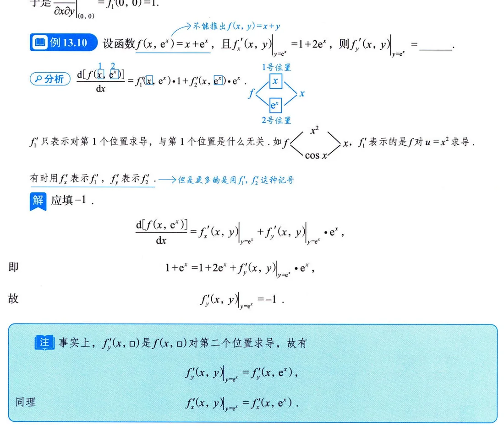
题 设函数 \(f(x,\mathrm{e}^x)=x+\mathrm{e}^x\)，且 \(f'_1(x,\mathrm{e}^x)=1+2\mathrm{e}^x\)，求 \(f'_2(x,y)\)。
思路 \(f'_1\) 只表示对第 1 个位置求导，与第 1 个位置放的是什么无关。对恒等式 \(f(x,\mathrm{e}^x)=x+\mathrm{e}^x\) 两边关于 \(x\) 求导，左边按"1 号位置导数 + 2 号位置导数 \(\times\mathrm{e}^x\)"展开。
要点
\[ \frac{\mathrm{d}}{\mathrm{d}x}\bigl[f(x,\mathrm{e}^x)\bigr]=f'_1(x,\mathrm{e}^x)\cdot1+f'_2(x,\mathrm{e}^x)\cdot\mathrm{e}^x=1+\mathrm{e}^x, \]
代入 \(f'_1(x,\mathrm{e}^x)=1+2\mathrm{e}^x\)：\(1+2\mathrm{e}^x+\mathrm{e}^xf'_2(x,\mathrm{e}^x)=1+\mathrm{e}^x\)，解得 \(f'_2(x,\mathrm{e}^x)=-1\)。而 \(f'_2(x,y)\) 是 \(f\) 对第 2 个位置的偏导（\(x,y\) 为独立自变量），把 \(y=\mathrm{e}^x\) 代入即取值 \(f'_2(x,\mathrm{e}^x)\)，故 \(f'_2(x,y)=-1\)。应填 \(-1\)。
注 陷阱在把 \(f'_2(x,y)\) 与 \(f'_2(x,\mathrm{e}^x)\) 当成两码事——它们是同一个函数在两处的取值，"对第 2 个位置求导"这个身份不变。同理可证 \(f'_1(x,y)|_{y=\mathrm{e}^x}=f'_1(x,\mathrm{e}^x)\)。
例13.11（变量代换改写偏导数关系式）
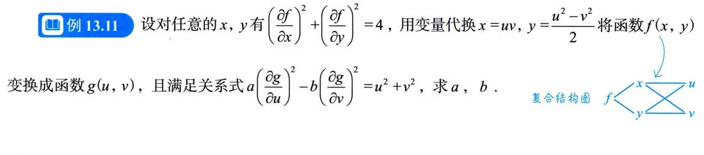
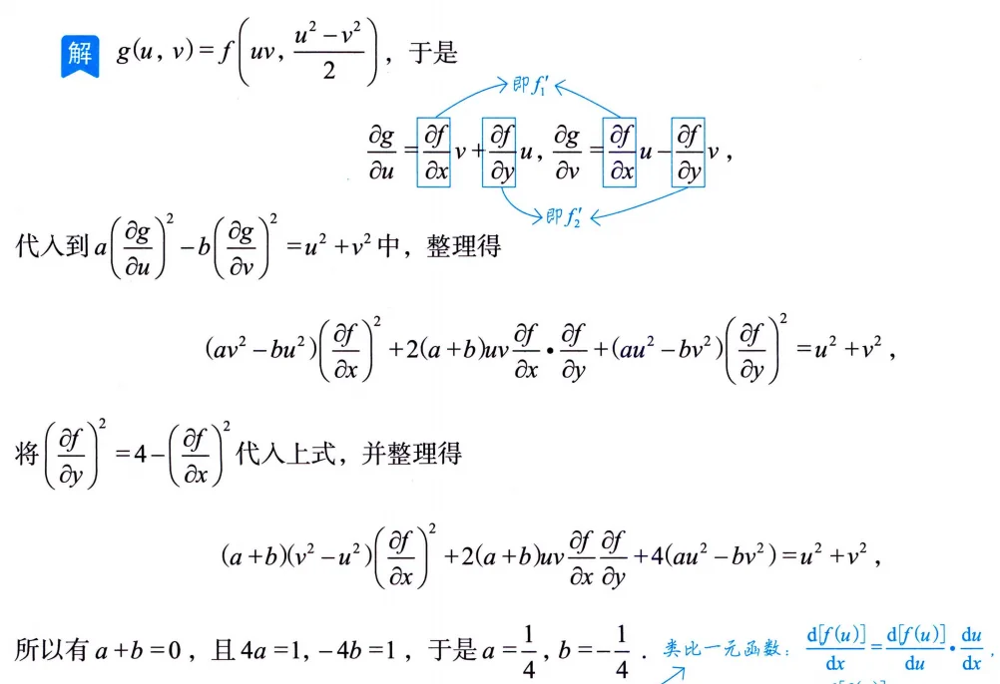
题 设对任意的 \(x,y\) 有 \(\left(\dfrac{\partial f}{\partial x}\right)^2+\left(\dfrac{\partial f}{\partial y}\right)^2=4\)，用变量代换 \(x=uv,\ y=\dfrac{u^2-v^2}{2}\) 将 \(f(x,y)\) 变换成 \(g(u,v)\)，使其满足关系式 \(a\left(\dfrac{\partial g}{\partial u}\right)^2-b\left(\dfrac{\partial g}{\partial v}\right)^2=u^2+v^2\)，求 \(a,b\)（题干关系式以原书截图为准）。
思路 变量代换题的固定套路：写 \(g(u,v)=f\bigl(uv,\frac{u^2-v^2}{2}\bigr)\)，画复合结构图，用链式法则把 \(g'_u,g'_v\) 展成 \(f'_x,f'_y\) 的线性组合，代回关系式，整理成关于 \(f'_x,f'_y\) 的二次型。
要点 \(g'_u=v f'_x+u f'_y\)，\(g'_v=u f'_x-v f'_y\)，代入整理得
\[ a(g'_u)^2-b(g'_v)^2=(av^2-bu^2)\Bigl(\frac{\partial f}{\partial x}\Bigr)^2+2(a+b)uv\frac{\partial f}{\partial x}\frac{\partial f}{\partial y}+(au^2-bv^2)\Bigl(\frac{\partial f}{\partial y}\Bigr)^2, \]
再利用题设 \((f'_x)^2+(f'_y)^2=4\) 消元整理，要求它恒等于 \(u^2+v^2\)：交叉项系数 \(2(a+b)uv\) 必须为零，得 \(a+b=0\)；再比较 \(u^2,v^2\) 的系数得 \(4a=1,\ -4b=1\)。于是 \(a=\dfrac14,\ b=-\dfrac14\)。
注 这类题不难在计算、难在"整理后比较系数"的胆量——把 \(f'_x,f'_y\) 当自由变量看系数即可。类比一元的换元求导 \(\dfrac{\mathrm{d}f(u)}{\mathrm{d}x}=f'(u)\dfrac{\mathrm{d}u}{\mathrm{d}x}\)，多元就是每个中间变量都贡献一条链。
例13.12（全微分形式不变性求隐函数微分）
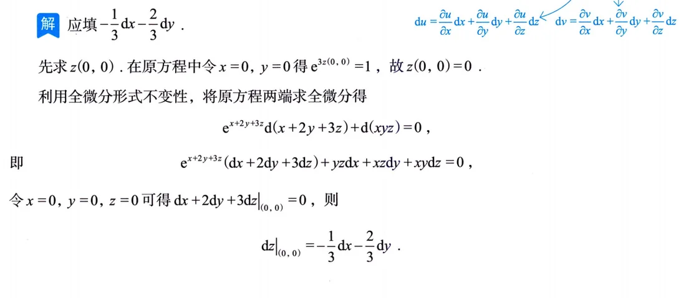
题 \(z=z(x,y)\) 由 \(\mathrm{e}^{x+2y+3z}+xyz=1\) 确定，求 \(\left.\mathrm{d}z\right|_{(0,0)}\)。
思路 先代 \(x=0,y=0\) 定出 \(z(0,0)=0\)；然后方程两边直接取全微分，一步到位。
要点 两边微分：
\[ \mathrm{e}^{x+2y+3z}\bigl(\mathrm{d}x+2\mathrm{d}y+3\mathrm{d}z\bigr)+yz\,\mathrm{d}x+xz\,\mathrm{d}y+xy\,\mathrm{d}z=0. \]
代入 \((0,0,0)\) 得 \(\mathrm{d}x+2\mathrm{d}y+3\mathrm{d}z=0\)，即
\[ \left.\mathrm{d}z\right|_{(0,0)}=-\frac13\mathrm{d}x-\frac23\mathrm{d}y. \]
注 隐函数求 \(\mathrm{d}z\)："先微分、再代点"通常比套偏导公式省一半计算；这题在例13.15 还会用公式法再做一遍，两种方法都要会。
例13.13（隐函数存在定理：判断能确定几个隐函数）
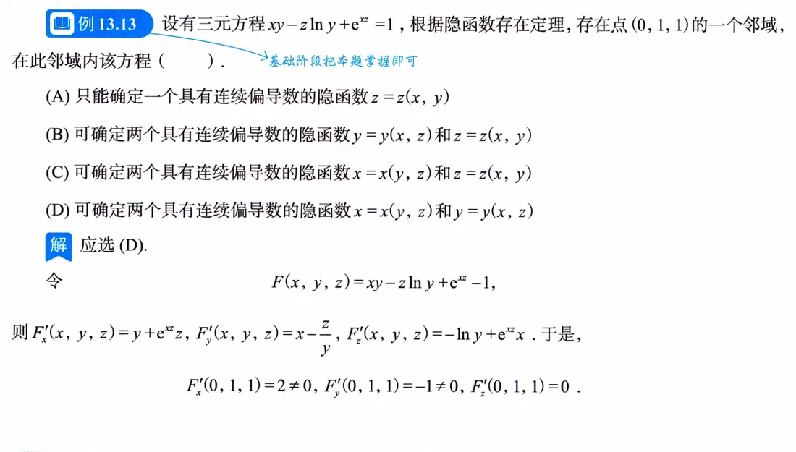
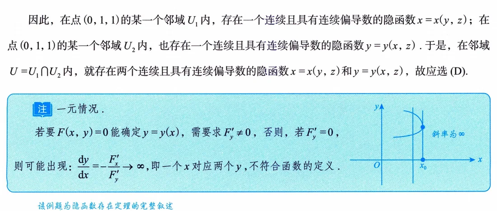
题 设有三元方程 \(xy-z\ln y+\mathrm{e}^{xz}=1\)，根据隐函数存在定理，存在点 \((0,1,1)\) 的一个邻域，在此邻域内该方程（ ）。
思路 逐个检验三个偏导在 \((0,1,1)\) 处是否非零：\(F'_x\neq0\) 可确定 \(x=x(y,z)\)，\(F'_y\neq0\) 可确定 \(y=y(x,z)\)，\(F'_z\neq0\) 可确定 \(z=z(x,y)\)。
要点 \(F=xy-z\ln y+\mathrm{e}^{xz}-1\)，则 \(F'_x=y+z\mathrm{e}^{xz}\)，\(F'_y=x-\dfrac{z}{y}\)，\(F'_z=-\ln y+x\mathrm{e}^{xz}\)。代 \((0,1,1)\)：\(F'_x=1+1=2\neq0\)，\(F'_y=0-1=-1\neq0\)，\(F'_z=0+0=0\)。于是在该点的邻域内可确定 \(x=x(y,z)\) 与 \(y=y(x,z)\)，但不能确定 \(z=z(x,y)\)。应选 (D)。
注 书上批注"基础阶段把本题掌握即可"——考法就是把三个偏导挨个代点验非零。\(F'_z=0\) 意味着"解出 \(z\)"这条路在此点走不通（联想印 P365 的几何解释：可能一个 \((x,y)\) 对应两个 \(z\)）。
例13.14（隐函数存在定理条件的充分性与必要性）
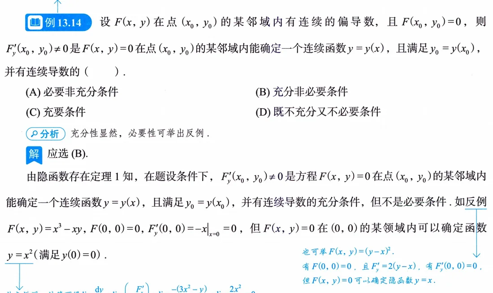
题 设 \(F(x,y)\) 在点 \((x_0,y_0)\) 的某邻域内有连续的偏导数，且 \(F(x_0,y_0)=0\)，则 \(F'_y(x_0,y_0)\neq0\) 是方程 \(F(x,y)=0\) 在 \((x_0,y_0)\) 的某邻域内能确定一个连续函数 \(y=y(x)\)（满足 \(y_0=y(x_0)\)）并有连续导数的（ ）。
思路 充分性就是隐函数存在定理 1 本身；必要性可举反例，找 \(F'_y(x_0,y_0)=0\) 但仍能确定隐函数的方程。
要点 由定理 1，\(F'_y(x_0,y_0)\neq0\) 保证能确定唯一的 \(y=y(x)\)，充分性成立。反例取 \(F(x,y)=x^2-xy\)：\(F(0,0)=0\)，\(F'_y=-x|_{(0,0)}=0\)，但 \(F=0\) 在 \((0,0)\) 的邻域内仍可确定函数 \(y=x\)（满足 \(y(0)=0\)）；也可举 \(F(x,y)=(y-x)^2\)。故非必要。应选 (B)。
注 书上补充说明很有意思：对 \(F=x^2-xy\)，在原点附近 \(\dfrac{\mathrm{d}y}{\mathrm{d}x}=\lim\dfrac{\Delta y}{\Delta x}\) 仍可算出一个值（一个 \(x\) 对应一个 \(y\)，不与函数定义矛盾）——\(F'_y\neq0\) 是"好用的充分条件"，不是"存在性本身的边界"。
例13.15（公式法求隐函数的全微分：与例13.12 对照）
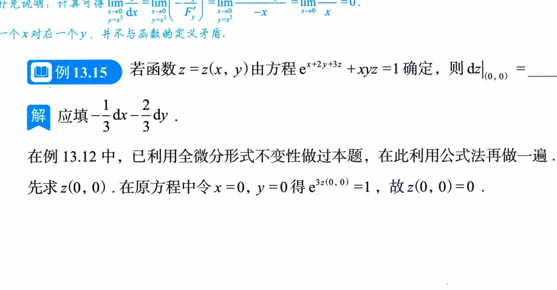
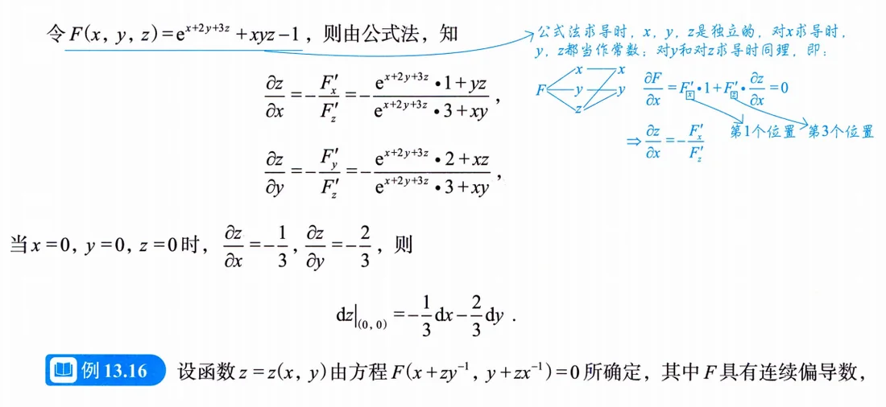
题 若函数 \(z=z(x,y)\) 由方程 \(\mathrm{e}^{x+2y+3z}+xyz=1\) 确定，则 \(\left.\mathrm{d}z\right|_{(0,0)}=\)（ ）。
思路 与例13.12 同题再用公式法做一遍：令 \(F=\mathrm{e}^{x+2y+3z}+xyz-1\)，求 \(F'_x,F'_y,F'_z\) 时把 \(x,y,z\) 当相互独立的变量（第 1、2、3 个位置各就各位）。
要点 \(F'_x=\mathrm{e}^{x+2y+3z}+yz\)，\(F'_y=2\mathrm{e}^{x+2y+3z}+xz\)，\(F'_z=3\mathrm{e}^{x+2y+3z}+xy\)，于是
\[ \frac{\partial z}{\partial x}=-\frac{\mathrm{e}^{x+2y+3z}+yz}{3\mathrm{e}^{x+2y+3z}+xy},\qquad \frac{\partial z}{\partial y}=-\frac{2\mathrm{e}^{x+2y+3z}+xz}{3\mathrm{e}^{x+2y+3z}+xy}. \]
先由 \(x=0,y=0\) 代回原方程得 \(z(0,0)=0\)，再代点：\(\left.\dfrac{\partial z}{\partial x}\right|_{(0,0)}=-\dfrac13\)，\(\left.\dfrac{\partial z}{\partial y}\right|_{(0,0)}=-\dfrac23\)，故 \(\left.\mathrm{d}z\right|_{(0,0)}=-\dfrac13\mathrm{d}x-\dfrac23\mathrm{d}y\)，与例13.12 结果一致。应填 \(-\dfrac13\mathrm{d}x-\dfrac23\mathrm{d}y\)。
注 两法对照的意义：全微分形式不变性一遍搞定 vs 公式法两个偏导各算一遍。公式法的独立性口吻一含糊（对 \(x\) 求导时把 \(z\) 也求进去），答案立刻翻车。
例13.16（抽象隐函数的公式法）
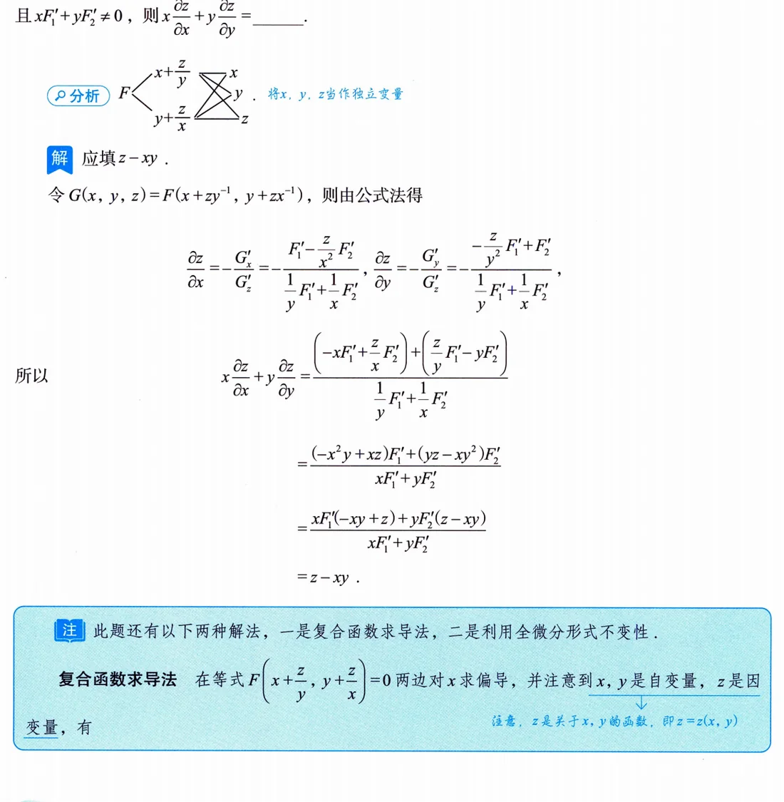
题 \(z=z(x,y)\) 由 \(F\left(x+\dfrac{z}{y},\ y+\dfrac{z}{x}\right)=0\) 确定，\(F\) 有连续偏导数且 \(xF'_1+yF'_2\neq0\)，求 \(x\dfrac{\partial z}{\partial x}+y\dfrac{\partial z}{\partial y}\)。
思路 公式法：令 \(G(x,y,z)=F\left(x+\dfrac{z}{y},\ y+\dfrac{z}{x}\right)\)，此时 \(x,y,z\) 独立，分别算 \(G'_x\)、\(G'_y\)、\(G'_z\)（第 1 个位置是 \(x+\dfrac{z}{y}\)，第 2 个位置是 \(y+\dfrac{z}{x}\)，别把位置认错）。
要点
\[ \frac{\partial z}{\partial x}=-\frac{G'_x}{G'_z}=-\frac{F'_1-\dfrac{z}{x^2}F'_2}{\dfrac{1}{y}F'_1+\dfrac{1}{x}F'_2},\qquad \frac{\partial z}{\partial y}=-\frac{G'_y}{G'_z}=-\frac{-\dfrac{z}{y^2}F'_1+F'_2}{\dfrac{1}{y}F'_1+\dfrac{1}{x}F'_2}, \]
通分相加，分子合并为 \((z-xy)\bigl(xF'_1+yF'_2\bigr)\)，于是
\[ x\frac{\partial z}{\partial x}+y\frac{\partial z}{\partial y}=\frac{(z-xy)\bigl(xF'_1+yF'_2\bigr)}{xF'_1+yF'_2}=z-xy. \]
应填 \(z-xy\)。
注 书上注还给了复合函数求导法与全微分形式不变性两种解法（对方程两边取 \(\mathrm{d}F=0\)，令 \(u=x+\dfrac{z}{y},v=y+\dfrac{z}{x}\) 展开 \(\mathrm{d}u,\mathrm{d}v\) 同样解出）；公式法最快，但"x、y、z 当独立变量"这个口吻必须站稳，一含糊就会把 \(z\) 也求进去。
例13.17（二元极值与一元截线极值的关系）
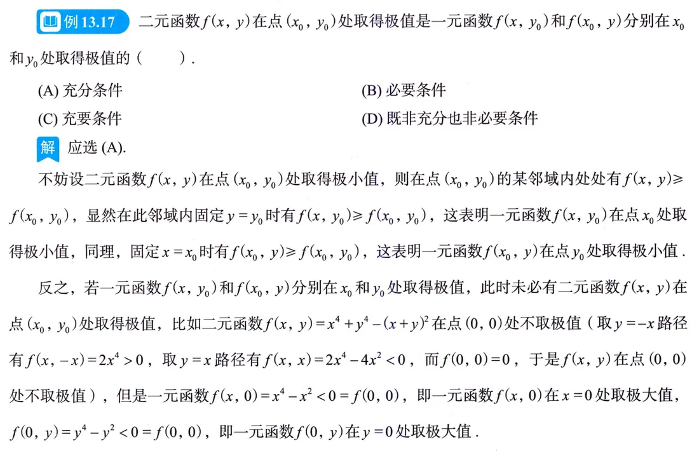
题 二元函数 \(f(x,y)\) 在点 \((x_0,y_0)\) 处取得极值是一元函数 \(f(x,y_0)\) 和 \(f(x_0,y)\) 分别在 \(x_0\) 和 \(y_0\) 处取得极值的（ ）。
思路 正方向：固定 \(y=y_0\)，邻域内的不等式照样成立；反方向：举反例，找两条截线取极值但整张曲面不取极值的函数。
要点 正方向：设 \(f\) 在 \((x_0,y_0)\) 取极小值，则某邻域内 \(f(x,y)\ge f(x_0,y_0)\)；固定 \(y=y_0\) 得 \(f(x,y_0)\ge f(x_0,y_0)\)，即 \(f(x,y_0)\) 在 \(x_0\) 处取极小值，同理 \(f(x_0,y)\) 在 \(y_0\) 处取极小值。反方向：取 \(f(x,y)=x^4+y^4-(x+y)^2\)，沿 \(y=x\) 有 \(f(x,x)=2x^4-4x^2<0=f(0,0)\)，沿 \(y=-x\) 有 \(f(x,-x)=2x^4>0\)，故 \((0,0)\) 不是极值点；但 \(f(x,0)=x^4-x^2<0=f(0,0)\)、\(f(0,y)=y^4-y^2<0=f(0,0)\)，两条一元截线都在原点取极大值。应选 (A)。
注 结论值得背：二元取极值 \(\Rightarrow\) 两条坐标截线取极值，反之不真。反例函数 \(x^4+y^4-(x+y)^2\) 的两路路径讨论是"判极值回定义"的模板。
例13.18（极大值点处 \(f''_{xx},f''_{yy}\) 的符号）
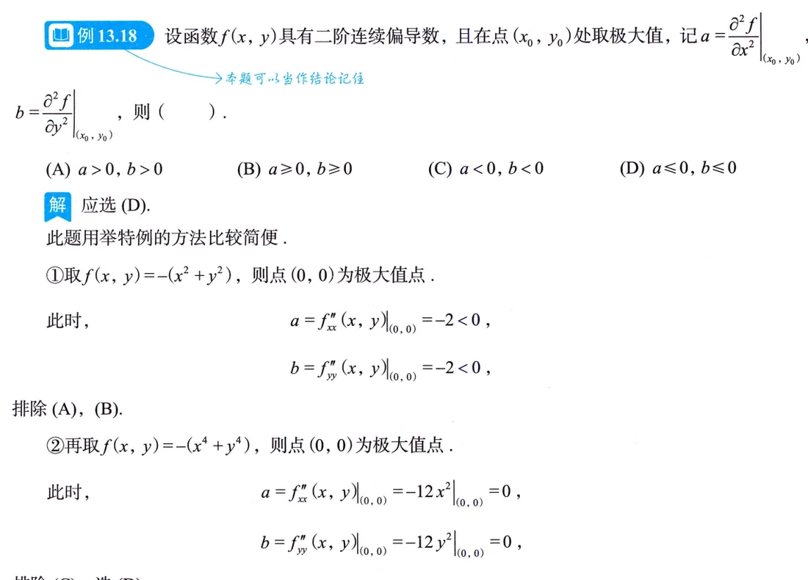
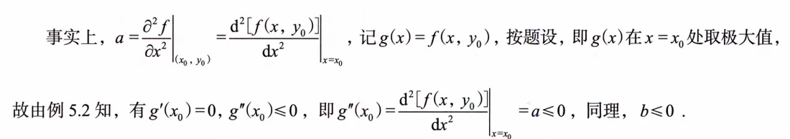
题 设函数 \(f(x,y)\) 具有二阶连续偏导数，且在点 \((x_0,y_0)\) 处取极大值，记 \(a=f''_{xx}(x_0,y_0)\)，\(b=f''_{yy}(x_0,y_0)\)，则（ ）。
思路 用举特例法先排除：极大值点处二阶偏导可以严格为负也可以取零，"能取到的都可能"，选带等号的方向；再用一元极值的必要条件严格证明。
要点 ①取 \(f=-(x^2+y^2)\)，\((0,0)\) 是极大值点，\(a=b=-2<0\)，排除 (A)(B)；②取 \(f=-(x^4+y^4)\)，\((0,0)\) 仍是极大值点，但 \(b=f''_{yy}(0,0)=-12y^2|_{(0,0)}=0\)，排除 (C)。故选 (D)：\(a\le0,\ b\le0\)。严格论证（印 P370）：记 \(g(x)=f(x,y_0)\)，按题设 \(g\) 在 \(x_0\) 处取极大值且 \(g''(x_0)\) 存在，由一元极值理论（联系第 5 讲例5.2）得 \(g'(x_0)=0,\ g''(x_0)\le0\)，而 \(g''(x_0)=f''_{xx}(x_0,y_0)=a\le0\)；同理 \(b\le0\)。
注 书上批注"本题可以当作结论记住"：极大值点处 \(f''_{xx}\le0\) 且 \(f''_{yy}\le0\)（极小值点处 \(\ge0\)）。它是一元"极大值点二阶导 \(\le0\)"的二维搬运，但没有 \(AC-B^2\) 那么强——只看两条坐标方向的凹凸。
例13.19（隐函数确定的函数求极值）
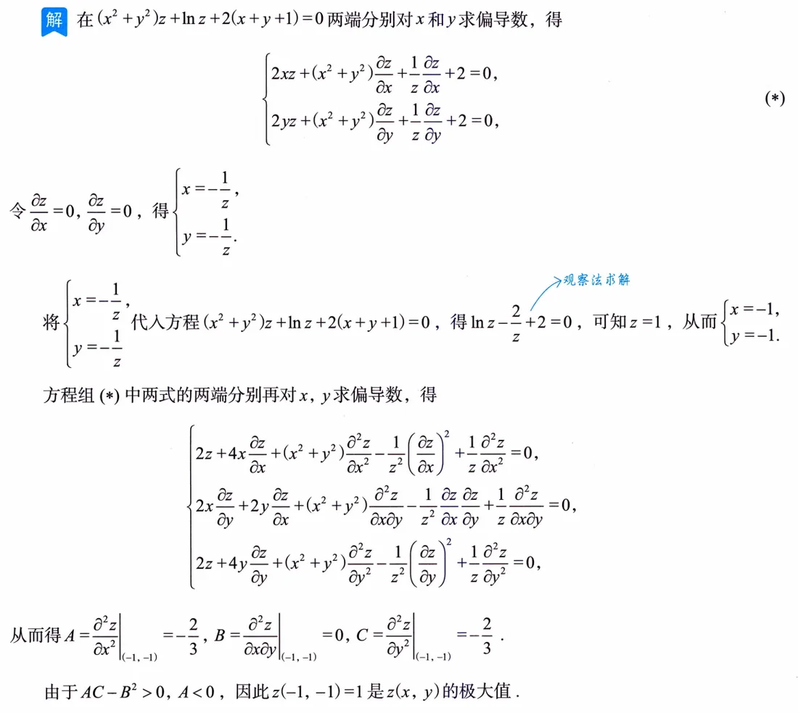
题 \(z=z(x,y)\) 由 \((x^2+y^2)z+\ln z+2(x+y+1)=0\) 确定，求 \(z(x,y)\) 的极值。
思路 隐函数极值的标准流程：方程两端求偏导得方程组 \((*)\)，令 \(z_x=z_y=0\) 与原方程联立定驻点，再对 \((*)\) 求导算 \(A,B,C\)，用 \(AC-B^2\) 判别。
要点 对 \(x\)、\(y\) 分别求偏导得 \((*)\)：
\[ 2xz+(x^2+y^2)\frac{\partial z}{\partial x}+\frac1z\frac{\partial z}{\partial x}+2=0,\qquad 2yz+(x^2+y^2)\frac{\partial z}{\partial y}+\frac1z\frac{\partial z}{\partial y}+2=0. \]
令 \(\dfrac{\partial z}{\partial x}=\dfrac{\partial z}{\partial y}=0\) 得 \(xz=yz=-1\)，即 \(x=y=-\dfrac{1}{z}\)，代回原方程得 \(\ln z-\dfrac{2}{z}+2=0\)，观察法解得 \(z=1\)（\(z=1\) 时 \(0-2+2=0\)），从而驻点 \((-1,-1)\)。对 \((*)\) 两端再求导并代入驻点，得
\[ A=\left.\frac{\partial^2 z}{\partial x^2}\right|_{(-1,-1)}=-\frac23,\qquad B=\left.\frac{\partial^2 z}{\partial x\,\partial y}\right|_{(-1,-1)}=0,\qquad C=\left.\frac{\partial^2 z}{\partial y^2}\right|_{(-1,-1)}=-\frac23. \]
由 \(AC-B^2=\dfrac49>0\)，\(A<0\)，故 \(z(-1,-1)=1\) 是极大值。
注 二阶偏导不必求一般表达式，"先代驻点值再解方程"能省大量计算——代入后每个方程里真正未知的只有 \(A,B,C\) 三个数。"观察法解超越方程"（试 \(z=1\)）也是这类题的常规动作。
例13.20（拉格朗日乘数法 + 不封闭约束的端点比较）
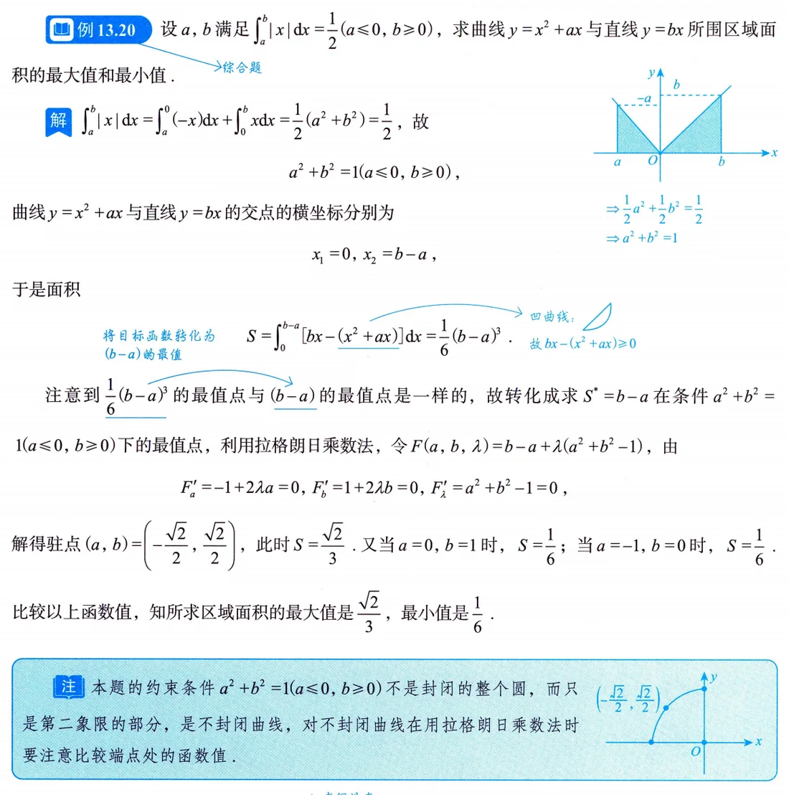
题 设 \(a,b\)（\(a\le0,\ b\ge0\)）满足 \(\displaystyle\int_a^b|x|\,\mathrm{d}x=\dfrac12\)，求曲线 \(y=x^2+ax\) 与直线 \(y=bx\) 所围区域面积的最大值和最小值。
思路 综合题。先把积分条件化简：\(\int_a^0(-x)\mathrm{d}x+\int_0^bx\mathrm{d}x=\dfrac{a^2+b^2}{2}=\dfrac12\)，即 \(a^2+b^2=1\)（\(a\le0,b\ge0\)）。再算面积：交点横坐标 \(x=0\) 与 \(x=b-a\)，面积只含 \(b-a\) 这一个组合——目标函数降成一元，用拉格朗日乘数法。
要点 \(S=\displaystyle\int_0^{b-a}\bigl[bx-(x^2+ax)\bigr]\mathrm{d}x=\dfrac{(b-a)^3}{6}\)，其最值点与 \(b-a\) 的最值点一致，转而求 \(S'=b-a\) 在 \(a^2+b^2=1\)（\(a\le0,b\ge0\)）下的最值。令 \(F(a,b,\lambda)=b-a+\lambda(a^2+b^2-1)\)，由 \(F'_a=-1+2\lambda a=0\)、\(F'_b=1+2\lambda b=0\)、\(F'_\lambda=a^2+b^2-1=0\) 解得驻点 \(\left(-\dfrac{\sqrt2}{2},\dfrac{\sqrt2}{2}\right)\)，此时 \(S=\dfrac{(\sqrt2)^3}{6}=\dfrac{\sqrt2}{3}\)。约束不是整个圆而是第二象限的四分之一圆弧（不封闭），必须补端点：\(a=0,b=1\) 与 \(a=-1,b=0\) 时均有 \(S=\dfrac16\)。故最大值 \(\dfrac{\sqrt2}{3}\)，最小值 \(\dfrac16\)。
注 本题的注是拉格朗日乘数法使用纪律的浓缩（印 P372）：约束 \(a^2+b^2=1(a\le0,b\ge0)\) 只是第二象限的一段弧，不是封闭曲线，用拉格朗日乘数法要注意比较端点处的函数值。另一个技巧是"同增同减替换目标函数"（\(S\) 换成 \(b-a\)），先化简再建模。
例13.21（最近点：拉格朗日乘数法与垂线原理）
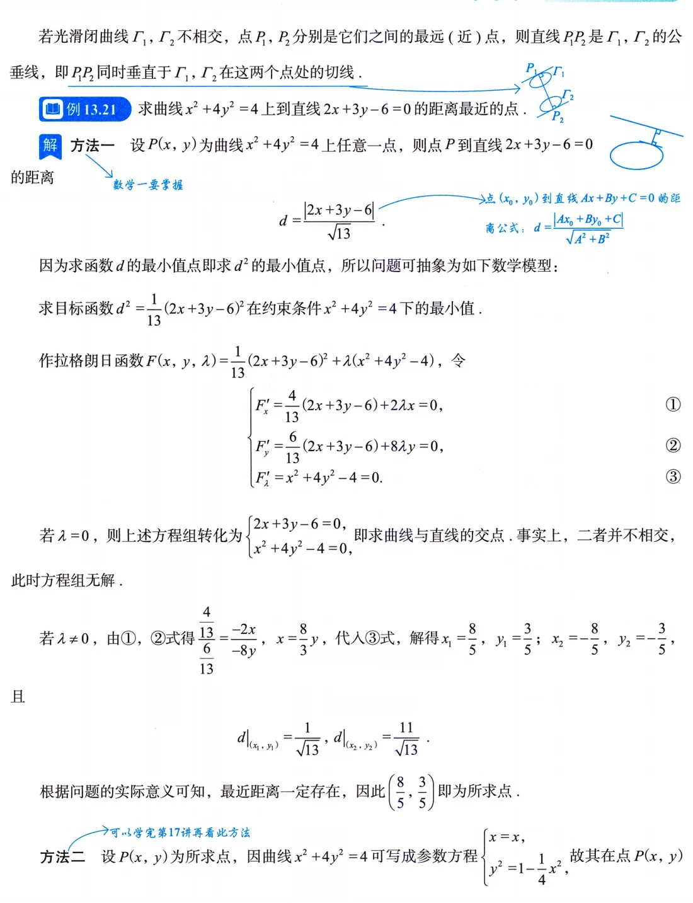
题 求曲线 \(x^2+4y^2=4\) 上到直线 \(2x+3y-6=0\) 距离最近的点。
思路 方法一：目标函数取 \(d^2=\dfrac{(2x+3y-6)^2}{13}\)（求 \(d\) 最小即求 \(d^2\) 最小），约束是椭圆，用拉格朗日乘数法；方法二：垂线原理，直线法向量 \(\boldsymbol{n}=(2,3)\) 与曲线切向量垂直。
要点 方法一作 \(F(x,y,\lambda)=\dfrac{1}{13}(2x+3y-6)^2+\lambda(x^2+4y^2-4)\)。若 \(\lambda=0\)，方程组退化为求曲线与直线的交点，但二者并不相交，无解，故 \(\lambda\neq0\)；由 \(①②\) 两式消去 \(2x+3y-6\) 得 \(-6\lambda x=-16\lambda y\)，即 \(x=\dfrac{8}{3}y\)，代入 \(③\) 式解得 \(\left(\dfrac{8}{5},\dfrac{3}{5}\right)\) 与 \(\left(-\dfrac{8}{5},-\dfrac{3}{5}\right)\)，对应的 \(d\) 分别为 \(\dfrac{1}{\sqrt{13}}\)、\(\dfrac{11}{\sqrt{13}}\)。由实际意义最近距离一定存在，故所求点为 \(\left(\dfrac{8}{5},\dfrac{3}{5}\right)\)。方法二：曲线 \(x^2+4y^2=4\) 写成参数式（或直接令 \(F=x^2+4y^2-4\)，切向量取 \(\tau=\left(1,\dfrac{\mathrm{d}y}{\mathrm{d}x}\right)=\left(1,-\dfrac{x}{4y}\right)\)），由 \(\boldsymbol{n}\perp\boldsymbol{\tau}\) 即 \(2\cdot1+3\left(-\dfrac{x}{4y}\right)=0\) 得同一方程 \(x=\dfrac{8}{3}y\)，余下相同。
注 垂线原理考纲没写但可以直接用，几何直观能绕开一大坨联立；书上还提示方法二用参数方程的版本"可以学完第 17 讲再看"（空间解析几何）。"曲线到直线距离"这类题两条路都要会。
例13.22（有界闭区域上的最值三步）
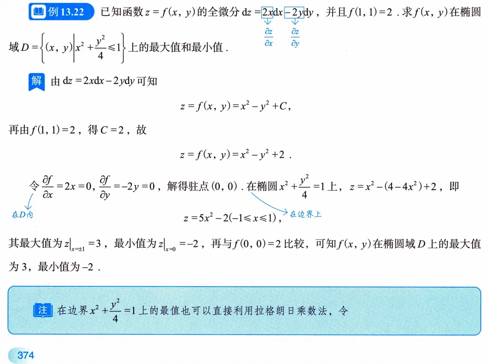
题 已知函数 \(z=f(x,y)\) 的全微分 \(\mathrm{d}z=2x\,\mathrm{d}x-2y\,\mathrm{d}y\)，且 \(f(1,1)=2\)，求 \(f(x,y)\) 在椭圆域 \(D=\left\{(x,y)\,\middle|\,x^2+\dfrac{y^2}{4}\le1\right\}\) 上的最大值和最小值。
思路 先由全微分反求 \(f\)（不定积分+定常数），再走闭区域最值三步：内部驻点、边界候选、比较。
要点 由 \(\mathrm{d}z=2x\mathrm{d}x-2y\mathrm{d}y\) 得 \(f=x^2-y^2+C\)，代 \(f(1,1)=2\) 得 \(C=2\)，故 \(f=x^2-y^2+2\)。①内部：\(f'_x=2x=0,\ f'_y=-2y=0\) 得驻点 \((0,0)\)，\(f(0,0)=2\)；②边界 \(x^2+\dfrac{y^2}{4}=1\) 上：代入 \(y^2=4-4x^2\) 得 \(z=5x^2-2\)（\(-1\le x\le1\)），最大值 \(z|_{x=\pm1}=3\)，最小值 \(z|_{x=0}=-2\)；③比较：最大值 \(3\)、最小值 \(-2\)。
注 书上注给边界另一条路：直接在边界上用拉格朗日乘数法，令 \(F=x^2-y^2+2+\lambda\left(x^2+\dfrac{y^2}{4}-1\right)\)，解得 \(M_1(0,2),\,M_2(0,-2),\,M_3(1,0),\,M_4(-1,0)\)，四个函数值 \(-2,-2,3,3\)，结论一致。边界方程简单时代入降元更快，两条路都要顺手。
易错点与技巧
- 二重极限否定存在只要两条路径：取 \(y=kx\)、\(y=x\)、\(y=kx^2\) 试出不同结果即可（印 P350 注(2)）。但肯定存在必须用夹逼或定义，路径法只能"否"不能"立"。夹逼的常用弹药是 \(|xy|\le\dfrac{x^2+y^2}{2}\)、\(\dfrac{x^2}{x^2+y^2}\le1\) 这类放缩。
- 关系图（印 P359，图13-6）默写方向别反：多元是"偏导连续 \(\Rightarrow\) 可微 \(\Rightarrow\) 连续、偏导存在 \(\Rightarrow\) 极限存在"，一元才是"可微 \(\Leftrightarrow\) 可导"。偏导存在既推不出连续也推不出可微，反例就是 \(z_1=|xy|\)（例13.8）；连续推不出偏导存在，反例 \(z=\sqrt{x^2+y^2}\)（印 P370）。
- 可微判别里 \(A,B\) 必须是该点用定义求出的偏导；分段函数拿公式法求出的偏导直接代分段点，是常见错法（例13.8 的规范流程值得背）。判别式的分母是 \(\rho=\sqrt{(\Delta x)^2+(\Delta y)^2}\)，别写成单个 \(|\Delta x|\)。
- 判"偏导数在该点是否连续"也有三步（印 P358）：①定义法求点值，②公式法求表达式，③看表达式在该点的极限是否等于点值。"偏导数的极限等于偏导极限点值"两个方向别混。
- 抽象复合函数二阶偏导：\(f'_1\)、\(f'_2\) 求导后复合结构不变，每项都是"外层导数乘中间变量导数"，漏掉 \(f''_{12}\)、\(f''_{21}\) 的交叉项、丢掉 \(f'_1\) 尾巴是重灾区（印 P361 注(2)，例13.9 的最后答案全靠尾巴项）。\(f'_1\) 只认位置不认内容（例13.10）。
- 隐函数两种口吻别混：公式法里 \(x,y,z\) 独立、对 \(x\) 求导时 \(z\) 不动；复合求导法里 \(z=z(x,y)\)、\(z\) 要跟着求（印 P366 蓝字批注）。求 \(\mathrm{d}z\) 优先"两边取微分再代点"（例13.12 vs 例13.15 对照）。
- 判断"能确定哪个隐函数"就验偏导非零：\(F'_x,F'_y,F'_z\) 在给定点哪个非零就能确定哪个变量当因变量（例13.13）；\(F'_y\neq0\) 只是充分条件不是必要条件（例13.14 反例 \(F=x^2-xy\)）。
- \(\dfrac{\partial f}{\partial x}\equiv0\) 推不出 \(f(x,y)=g(y)\)——除非区域内任意两点间的竖线段都整个落在 \(D\) 内（印 P368 反例）；同理 \(\dfrac{\partial u}{\partial\theta}\equiv0\) 推不出 \(u(r,\theta)=g(r)\)。一元结论往二元搬，每一步都要问"区域形状答不答应"。
- 极值可疑点要包括偏导不存在的点（\(z=\sqrt{x^2+y^2}\) 在原点取极小值）；\(\Delta=AC-B^2=0\) 时充分条件失效，只能回定义或另找路径（印 P370）。
- 极大值点处 \(f''_{xx}\le0,\ f''_{yy}\le0\)（例13.18，可当结论记），但注意没有严格不等号——\(-(x^4+y^4)\) 在原点 \(a=b=0\)。反过来的方向（\(a,b\le0\) 推极大值）当然不成立。
- 二元取极值只是一元截线取极值的充分条件（例13.17，反例 \(x^4+y^4-(x+y)^2\)）；讨论"某点是不是极值"拿不准时，取 \(y=x\)、\(y=-x\)、\(y=kx\) 几条路径试函数值正负。
- 拉格朗日乘数法遇到不封闭的约束曲线（如例13.20 里第二象限的四分之一圆）要补端点函数值再比较；\(\lambda=0\) 常有几何含义（约束与目标相交），可以拿来快速排除（例13.21 里 \(\lambda=0\) 导致无解）。
- 隐函数极值（例13.19 型）别去解 \(z(x,y)\) 的显式表达——直接对方程求偏导、令一阶偏导为零联立原方程定驻点，二阶偏导"先代点再解"，计算量小一个量级。
- 闭区域最值三步（印 P374）一步不能省：只查内部驻点、或只查边界，都是丢分点；边界候选点既可以用拉格朗日乘数法也可以代入降元（例13.22 两法对照）。目标函数先化简（求 \(d\) 最值换成 \(d^2\)、\(S=\frac{(b-a)^3}{6}\) 换成 \(b-a\)）再建模。
考点与方法补充（站注）
以下为站注内容，基于公开真题统计与经验贴整理，非原书文字；数学事实以原书为准。
- 考频定位（站注·真题大数据）：按新东方《考研高数历年真题大数据》近 15 年统计，「多元函数极值与最值」位于第一梯队（几乎每年必考、合计占高数分值 60%+ 的梯队成员），「多元复合函数（抽象函数）偏导」位于第二梯队（15 年出现 10 次以上的高频非必考）；高频考法就是书上两个重难点的原样复刻——条件极值拉格朗日乘数法大题、"连续、偏导、可微关系图"概念辨析选择题。换句话说：本讲选择题送分看关系图，大题得分看拉格朗日，两头都别放。
- 题型地图（站注）：把本讲 22 道例题按真题考法归堆——①概念辨析：二重极限存在性、偏导存在性、可微性（例13.1、13.3、13.8，习题 13.1、13.3）；②计算基本功：抽象复合二阶偏导、全微分、隐函数偏导（例13.9–13.16，习题 13.4、13.7–13.11）；③极值最值：无条件极值、隐函数极值、条件极值、闭区域最值（例13.17–13.22，习题 13.5、13.12–13.14）。真题基本不出这个范围，数三再加一道经济应用（习题 13.6 的需求弹性型）。
- 张宇方法论印证（站注）：张宇反复讲"尽快结束纯听课阶段，自己动手最重要""计算能力是决定分数的第一因素"——本讲是最好的试金石：可微判别三步、拉格朗日四步流程全背得出，不代表联立方程解得动；例13.19–13.22 四道大题建议掐时间手算一遍再对答案。强化36讲第 1 讲的主题"判定类型，做好计算"放在本讲就是：先判型（无条件/条件/闭区域），再套对应流程算。
- 与前后讲的衔接（站注）：往回看，本讲的极值必要条件与例13.18 的证明直接调用第 5 讲一元极值结论（书上明写"由例5.2知"），复合求导的底子是第 4 讲；往远看，第 14 讲二重积分的被积函数、积分区域最值问题会反复用本讲的闭区域最值三步；数一的同学还要注意：例13.21 方法二的参数方程切向量，学完第 17 讲空间解析几何再回头看会更顺（书上原话"可以学完第17讲再看此方法"）。数学一的二元泰勒公式（章首目标②）在基础阶段了解即可，强化阶段展开。
- 跨章节综合趋势（站注·真题大数据）：真题大数据显示命题趋势是跨章节综合题比重上升，本讲是天然的"综合题载体"——变限积分含参数（例13.4、13.5）、由偏导反求函数（例13.6）、全微分反求参数（例13.7）都是前十章知识与多元方法的拼接；复习时把例13.4–13.7 当"联动题"整体过一遍，比单刷各讲散题有效。
- 投入产出（站注）：数学一/三卷面高数占 56%、数学二占 78%（150 分/180 分钟，学信网/大纲口径），本讲是两梯队考点叠加的一讲，且题型流程化程度高（三步、四步都是死步骤），属于"练熟就稳拿"的板块。检验标准沿用经验贴共识：至少做近十年真题，随机抽本讲相关 5 道大题独立完成、正确率 \(\ge90\%\) 才算过关。
知识清单自测
自测题
1. 下列命题中正确的是（ ）。
(A) 偏导数存在 \(\Rightarrow\) 连续 (B) 连续 \(\Rightarrow\) 偏导数存在 (C) 可微 \(\Rightarrow\) 连续 (D) 偏导数连续 \(\Leftrightarrow\) 可微
查看答案
解 选 (C)。由关系图（印 P359）：可微 \(\Rightarrow\) 连续成立且不可逆。(A) 的反例：\(f(x,y)=\dfrac{xy}{x^2+y^2}\)（原点处补充定义 \(f(0,0)=0\)），\(f'_x(0,0)=f'_y(0,0)=0\) 存在，但沿 \(y=x\) 极限为 \(\dfrac12\neq f(0,0)\)，不连续；(B) 的反例：\(z=\sqrt{x^2+y^2}\) 在原点连续但偏导不存在；(D) 错在"偏导连续"只是可微的充分条件，不是必要条件（存在可微而偏导不连续的函数）。
2. 求 \(\lim\limits_{(x,y)\to(0,0)}\dfrac{x^2y}{x^2+y^2}\)。
查看答案
解 用夹逼：\(0\le\left|\dfrac{x^2y}{x^2+y^2}\right|=\dfrac{x^2}{x^2+y^2}\cdot|y|\le|y|\to0\)，故极限为 \(0\)。分子（三次）阶数高于分母（二次），属于"低阶夹逼"型；若把分子换成 \(xy\)（同阶），沿 \(y=kx\) 得 \(\dfrac{k}{1+k^2}\) 随 \(k\) 而异，极限就不存在了——对照例13.1。
3. 设 \(f(x)\) 可微且 \(f'(0)=\dfrac{1}{2}\)，\(z=f(4x^2-y^2)\)，求 \(\left.\mathrm{d}z\right|_{(1,2)}\)。
查看答案
解 令 \(u=4x^2-y^2\)，则 \(\dfrac{\partial z}{\partial x}=f'(u)\cdot 8x\)，\(\dfrac{\partial z}{\partial y}=f'(u)\cdot(-2y)\)。在 \((1,2)\) 处 \(u=0\)，故 \(\left.\dfrac{\partial z}{\partial x}\right|_{(1,2)}=8\cdot\dfrac{1}{2}=4\)，\(\left.\dfrac{\partial z}{\partial y}\right|_{(1,2)}=-4\cdot\dfrac{1}{2}=-2\)，所以 \(\left.\mathrm{d}z\right|_{(1,2)}=4\,\mathrm{d}x-2\,\mathrm{d}y\)。（即原书习题 13.8 的答案。）
4. 设 \(z=z(x,y)\) 由 \((z+y)^x=x^2\) 确定，求 \(\left.\dfrac{\partial z}{\partial x}\right|_{(1,1)}\)。
查看答案
解 令 \(F(x,y,z)=(z+y)^x-x^2\)，则 \(F'_x=(z+y)^x\ln(z+y)-2x\)，\(F'_z=x(z+y)^{x-1}\)。将 \(x=1\)，\(y=1\) 代入原方程得 \((z+1)^1=1\)，即 \(z=0\)。于是
\[ \left.\frac{\partial z}{\partial x}\right|_{(1,1)}=-\frac{F'_x}{F'_z}\bigg|_{(1,1,0)}=-\frac{1\cdot\ln 1-2}{1\cdot 1}=2. \]
（即原书习题 13.9 的答案；求 \(F'_x\) 时 \(z,y\) 都当常数。）
5. 求二元函数 \(f(x,y)=x^2y^2+x\ln x\) 的极值。
查看答案
解 \(f'_x=2xy^2+1+\ln x\)，\(f'_y=2x^2y\)。令二者为零：由 \(f'_y=0\) 得 \(x=0\)（此时 \(\ln x\) 无意义，舍去）或 \(y=0\)；再由 \(1+\ln x=0\) 得 \(x=\dfrac{1}{\mathrm{e}}\)，唯一驻点 \(\left(\dfrac{1}{\mathrm{e}},0\right)\)。二阶偏导 \(f''_{xx}=2y^2+\dfrac{1}{x}\)，\(f''_{xy}=4xy\)，\(f''_{yy}=2x^2\)，代入驻点得 \(A=\mathrm{e}\)，\(B=0\)，\(C=\dfrac{2}{\mathrm{e}^2}\)。由 \(AC-B^2=\dfrac{2}{\mathrm{e}}>0\) 且 \(A>0\)，故 \(\left(\dfrac{1}{\mathrm{e}},0\right)\) 为极小值点，极小值 \(f\left(\dfrac{1}{\mathrm{e}},0\right)=-\dfrac{1}{\mathrm{e}}\)。（即原书习题 13.12。）
6. 求 \(f(x,y)=x^2+y^2+x\) 在闭区域 \(D=\{(x,y)\mid x^2+y^2\le1\}\) 上的最大值与最小值。
查看答案
解 走闭区域最值三步。①内部：\(f'_x=2x+1=0\)，\(f'_y=2y=0\) 得驻点 \(\left(-\dfrac12,0\right)\in D\)，\(f\left(-\dfrac12,0\right)=-\dfrac14\)。②边界 \(x^2+y^2=1\)：代入 \(x=\cos t\) 也可，这里用拉格朗日乘数法，令 \(F=x^2+y^2+x+\lambda(x^2+y^2-1)\)，由 \(F'_x=2x+1+2\lambda x=0\)、\(F'_y=2y+2\lambda y=0\)、\(F'_\lambda=x^2+y^2-1=0\)：若 \(\lambda\neq-1\) 则 \(y=0\)，代 \(x=\pm1\) 得两点 \((1,0)\)、\((-1,0)\)；若 \(\lambda=-1\) 则 \(1=0\) 矛盾。边界候选值 \(f(1,0)=2\)，\(f(-1,0)=0\)。③比较 \(-\dfrac14,\ 2,\ 0\)：最大值 \(2\)（在 \((1,0)\)），最小值 \(-\dfrac14\)（在 \(\left(-\dfrac12,0\right)\)）。（仿例13.22/习题 13.14 的流程。）